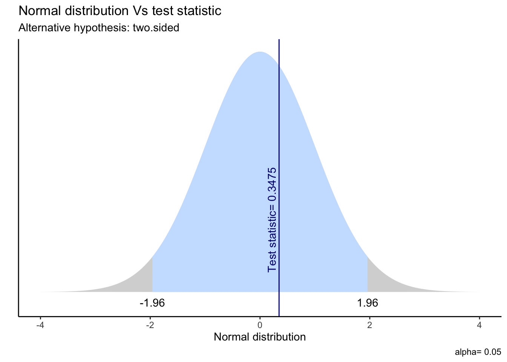
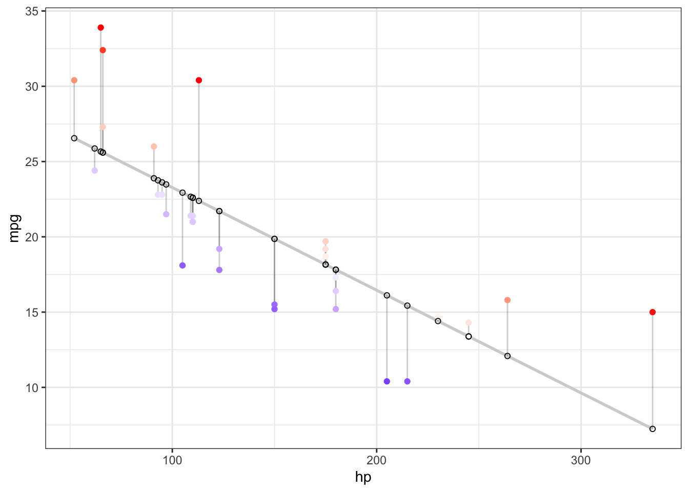
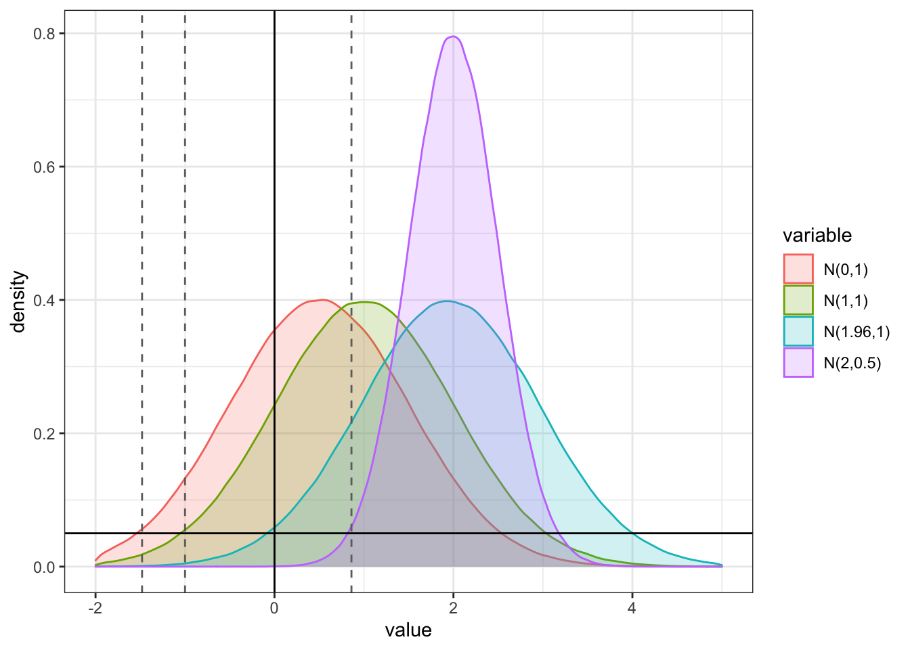
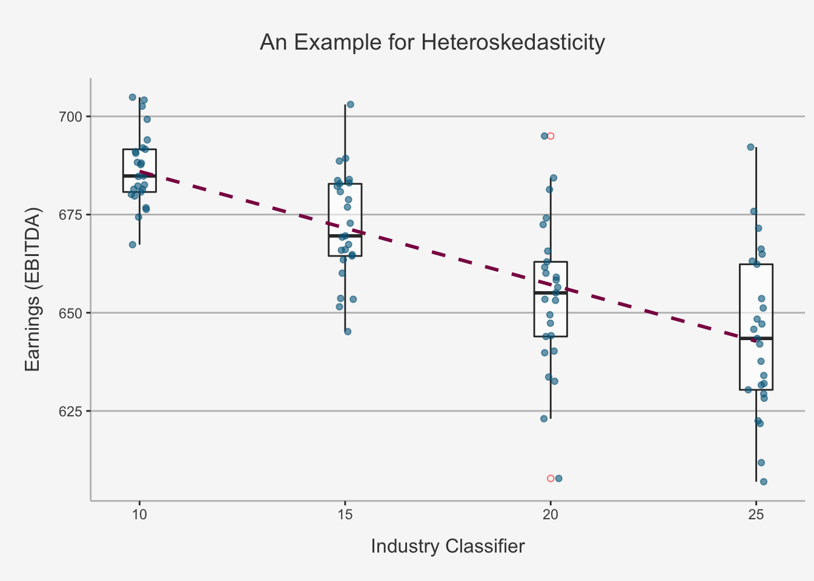
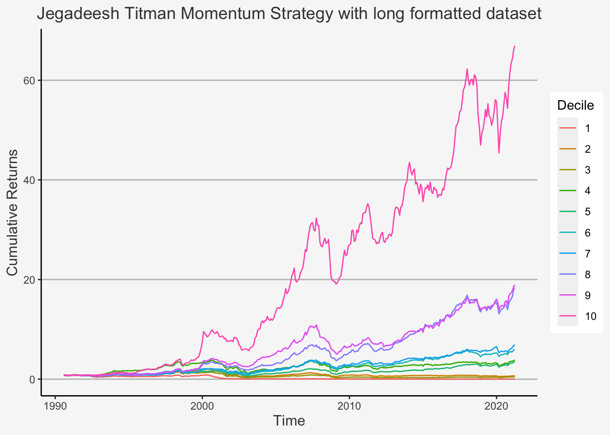

Chapter 2 Chapter 1: The Programming Environment
The first week covers two baseline subjects required to work within the field of empirical financial applications.
The first topic covers the application environment. Therein, we cover the structure and use of the R Markdown file, on which we will write all of the subjects covered during the Lab sessions. We offer a discussion as how to create a markdown file, what makes these files so special in empirical research, how to organise and shuffle them as well as their connectivity to latex. Especially, we will consider how to write functions, how to add text-based outputs, how to construct and use coding cells as well as how to render the files.
2.1 Markdown Files
The first part of the programming environment concerns the general programming environment. Markdown files will be used as programming interface for the Exercise and Lab sessions. Within these files, the students will describe the theoretical questions and solve the empirical exercises. Furthermore, the students will write a report and present their results in Markdown files.
R Markdown files work as combination of R files and Latex files. That is, they enable the use of coding results and writing a report automatically. The handy feature arises in that you don’t have to copy your code output, tables or other things into a latex file in which you write your report. However, although we advise the use of a markdown file for writing reports, it is important to stress that we do not recommend writing entire papers or theses within markdown files, as the compiling burden could render mistakes within the program. As such, we are indifferent whether you decide to provide markdown files or Latex files.
2.1.1 How to create a Markdown File
To create a markdown file, you simply open your R Studio, in the side bar you click on Edit, then you select New File and R Markdown.... It will pop up a new window where you need to enter the title as well as the authors. After choosing appropriate names, you can select one of the options HTML, PDF or Word as an output window. This is the first handy feature of markdown files: They enable different outputs, meaning you can have a multitude of channels to present it in. Further note that on the left-hand side, there is a sidebar which allows you to choose other file types, such as Shiny (supporting interactive graphs) or presentation files. Although we do not cover these throughout the lecture, they offer exciting new options.
Although we would advise you to use PDF as output, you can also choose HTML to see how a HTML output would look like, just click anywhere here.
Once you choose your desired output format, you will see that a new window pops up that looks like this:

Figure 1: Markdown First file structure
In order to comprehend the structure of a markdown file, it is firstly important to understand that a markdown file consists of white spaces and grey code Chunks The white spaces are used to write text, whereas the code Chunks are used to write code. Importantly, you won’t need the part below the first code block, so just delete everything from the “## R Markdown”" title on. This will leave you with only the first code block.
The first code block is important because there you can get your working directory set for the entire markdown session. You set your working directory in the following way
# knitr::opts_knit$set(root.dir = "/This/is/your/path/to/your/files/")The working directory is your source file from which R gets all data and to which R sends all outputs, by default. You can later change your working directory or the path from which files should be read / should be written to, but it is handy to define one source that can be used for most of the files.
Once you enter your preferred working directory, you can continue to start entering the packages you want to use. For that, add a code block by clicking on the green tool box above and select the option “R”, just as in the image below.

Figure 1: Markdown Select R Codeblock
Once you have your codenblock, you can enter the packages you need to use. It is handy to define functions which either install the packages or load the packages for that:
# packs.inst <- c("readxl","foreign","dplyr","tidyr","ggplot2","stargazer","haven","dummies","Hmisc", "lmtest","sandwich", "doBy", "multiwayvcov", "miceadds", "car", "purrr", "knitr", "zoo", "readstata13", "tidyverse", "psych", "wesanderson", "lubridate","reporttools", "data.table", "devtools", "rmarkdown","estimatr", "ivpack", "Jmisc", "lfe", "plm", "tinytex", "xts", "psych", "PerformanceAnalytics", "roll", "rollRegres", "glmnet", "hdm", "broom", "RCurl", "learnr", "maps", "fGarch", "remotes", "RPostgreSQL", "wrds", "DBI", "RPostgreSQL", "remotes", "RPostgres")
# packs.inst <- c()
# lapply(packs.load, require, character.only = TRUE)
# lapply(packs.inst, install.packages, character.only = FALSE) The underlying idea of this code block is that you just create a list with all the packages you need to load first and assign it a name (packs.load). Then, you uncomment the first code line (# lapply(packs.inst, require, character.only = TRUE)) to load the respective packages.
However, it might be the case that you did not yet install all of the necessary packages. In that case, just take all the packages you did not yet install and add them to the list called packs.inst. Then, uncomment the second code line (lapply(packs.inst, install.packages, character.only = FALSE)) and run that code.
The idea behind the code block is that you apply the install.packages or require command for a list of packages, instead of manually installing or loading each of them. Although these are more packages than needed for the firs sessions, it still is handy to have an overview and automate a rather cumbersome procedure.
2.1.2 The R Markdown Structure
We just have created the markdown file. Now it comes to understanding how to work on this thing. For that, we first need to understand the underlying structure.
In general, R Markdown files are comprised of two parts: White Spaces and Grey Code Chunks
White spaces are the spaces you are currently reading this text. They serve as string-based Chunks, meaning that you can write human language based sentences within these cells. As such, these white spaces serve as areas for writing results of reports, explanations, formulas or in general everything that has no code-based output at the end.
Opposed to this, Code Chunks serve as fields in which you write your actual code. The two boxes we just added before are coding boxes. To use them, just follow th approach I described earlier. Code Chunks incorporate many nice features, which we will cover next.
2.1.2.1 The use of Code Chunks
Code Chunks incorporate a number of handy features that can be defined quite easily. To set certain code chunk properties, we make use of the packages knitr. Maybe you realised this already, we used this package before to define the working directory source. Knitr, in general, is used to handle most of the R syntax and background, or administrative, tasks, R needs to do in order to operate.
To set code chunk options, we just access the {r} field in the top row of each code chunk.
Markdown offers quite a range of potential options to include, so make sure to check them out on this link.
In general, the most used settings involve the following:
eval = FALSE: Do not evaluate (or run) this code chunk when knitting the RMD document. The code in this chunk will still render in our knittedhtmlecho = FALSE: Hide the code in the output. The code is evaluated when the Rmd file is knit, however only the output is rendered on the output document.results = hide: The code chunk will be evaluated but the results or the code will not be rendered on the output document. This is useful if you are viewing the structure of a large object (e.g. outputs of a large data.frame which is the equivalent of a spreadsheet in R).include = FALSE: runs the code, but doesn’t show the code or results in the final document. Use this for setup code that you don’t want cluttering your report.message = FALSEorwarnings = FALSE: prevents messages or warnings from appearing in the finished fileerror = TRUE: causes the render to continue even if code returns an error. This is rarely something you’ll want to include in the final version of your report, but can be very useful if you need to debug exactly what is going on inside your Rmd.tidy = TRUE: tidy code for displaycache = TRUE: When the cache is turned on, knitr will skip the execution of this code chunk if it has been executed before and nothing in the code chunk has changed since then. This is useful if you have very time-consuming codes. These would then be skipped if they haven’t been changed since the last rendering.comment="": By default, R code output will have two hashes ## inserted in front of the text output. We can alter this behavior through the comment chunk option by e.g. stating an empty space.
Furthermore, we can use specific options for figures to include in the files:
fig.width =: Defines the figure width in the chunkfig.height =: Defines the figure height in the chunkfig.align =: Defines the alignment of the figure (left, center, right)fig.cap =; Defines the caption of the figure
2.1.2.2 The use of White Spaces
White spaces are commonly used to define the text we write in a markdown file. Markdown white spaces have the handy feature that they follow the same syntax as Latex files. Consequently, it is very easy to write formulas, expressions, definitions or other features commonly used in Latex based tools or applications. However, since this is not a drag-and-drop interface, commonly used ways of working in other programs, such as Microsoft Word, do not work here. But since we are working within an academic setting, we should definitively foster the use of non Latex-based writing.
We also call the white space writing Pandoc’s Markdown. The most important features of it are the following:
To structure different markdown files, we need to define headers that indicate in which part of the file we currently are. We define headers by using the # sign. We have, in total, six headers available, that increase in specification with increasing amount of #:
#: Header 1##: Header 2###: Header 3####: Header 4#####: Header 5######: Header 6
In general, we use three different styles to design the font:
textbf{}or** **: This is to indicate a bold text (write either in brackets or between the arcteryx)textit{}or* *: This is to indicate an italic textunderline{}: This is to indicate an underlined textverbatim: This is to indicate the verbatim text - it is a text in this grey box which is more strongly visible
We can define lists with several properties:
*: This will render an item in an unordered list+: This will render a sub-item in an unordered list-: This will render a sub-sub-item in an unordered list1.: This will render an item in an ordered listi): This will render a sub-item in an ordered listA.: This will render a sub-sub-item in an ordered list
[link](name): This will render a link to a specific URL codeJump to [Header 1](#anchor): This will jump to a certain part in the Rmd. In this case, Header 1
:
: This will include the image from a given file path on your computer and add a caption
:
$$ $$: This forms a code block in which math mode or other modes can be used (just like with latex). Neatly, the output is shown immediately$ $: This is the same as the double-dollar-sign, but you can use it in a sentence just to write some mathematical notion in a string-based text
Rmd offers a great range of different mathematical symbols and equations. They follow the same syntax as in latex files. To get a good overview, just visit the following link.
Importantly, if you want to use lower- or upper subscripted letters, such as in mathematical notations, you need to use x_t or x^t to do so. Note that, if you have more than one letter or one mathematical symbol, these subscripts must always be in {}. That is: x_{t,p} or x^{t,p}.
To create equations, we simply use the following syntaxes:
If we only want to use an easy mathematical equation, we can use the following:
\[ p(x) = \sum_{w_i \in E} p_i \]
If we want to use more complex mathematical symbols, we need to use the \begin{equation} ... \end{equation} command:
\[ \begin{equation} \textbf{C} = \left( \begin{matrix} 1 & \rho_{12} & \dots & \rho_{1n} \\ \rho_{12} & 1 & \dots & \rho{2n} \\ \vdots & \vdots & \ddots & \vdots \\ \rho_{1n} & \rho_{2n} & \dots & 1 \end{matrix} \right) \end{equation} \]
Lastly, if we have proofs to write or want an order to show many calculation steps within a formula, then we need to use the \begin{align} ... \end{align} command:
\[ \begin{align} var(aX + bY) &= E[(aX + bY - E[aX]E[bY])^2]\\ &= E[((aX - E(aX)) + (bY - E(bY)))^2] \\ &= E[(a(X-E(X)) + b(Y-E(Y)))^2] \\ &= a^2E[X-E(X)]^2 + b^2(Y-E(Y))^2 + 2 ab(X-E(X))(Y-E(Y))\\ &= a^2\cdot var(X) + b^2\cdot var(Y) + 2\cdot a \cdot b \cdot cov(X,Y) \end{align} \]
2.2 Coding In R - A concise overview
Now that we understand the most important concepts of creating and maintaining the programming environment, it is now time to actually start programming. While we are doing this in this file, I want to emphasize that much of the content is taken by Derek L. Sonderegger, who created an awesome bookdown book in which he explains the most important first steps of using R very concisely.
We will cover most of what he’s written in this Markdown. But, if you have any further questions, you can also stick to his files. Note that we do not expect you to understand everything that is written here. However, it should serve as a guideline to show you what is all available for R and what you could use R for. Furthermore, we will introduce some of the most important concepts of his work within our own domain.
2.2.1 Introduction
In the first chapter, we cover the basics of R. R is a open-source program that is commonly used in Statistics. It runs on almost every platform and is completely free and is available at www.r-project.org. Most of the cutting-edge statistical research is first available on R.
Finding help about a certain function is very easy. At the prompt, just type help(function.name) or ?function.name. If you don’t know the name of the function, your best bet is to go the the web page which will search various R resources for your keyword(s). Another great resource is the coding question and answer site stackoverflow.
2.2.2 Vectors
2.2.2.1 Creating Vectors
R operates on vectors where we think of a vector as a collection of objects, usually numbers. In R, we can define vectors with three functions. Arbitrary Vectors
The first thing we need to be able to do is define an arbitrary collection using the c() function.
# Define a vector of numbers:
c(1,2,3,4)## [1] 1 2 3 4An important feature of vector creation is that we can repeat certain entries multiple times to get a vector of only those entries (instead of manually typing in the same number n times). We can do so by using the function rep(x, times), which just repeats x a the number times specified by times:
Vectors with repeating elements
# This repeats 2 and 3 five times
rep(c(2,3), 5)## [1] 2 3 2 3 2 3 2 3 2 3Vectors with a sequence
If we want to define a sequence of numbers, we can do so by using the function seq(from, to, by, length.out).
# Define a sequence from 1 to 10 but only take each second element:
seq(from=1, to=10, by=2)## [1] 1 3 5 7 9The by = argument is especially handy here, since it allows us to draw any arbitrary sequence.
2.2.2.2 Accessing Vector Elements
# We create a vector first:
vec <- c(1,3,8,5,1,9)Accessing Single Elements
We can access elements of vectors by calling a squared bracket around the vector item [].
# Get the 3rd element
vec[3]## [1] 8Accessing Multiple Elements
As before, we can access multiple elements by using the c() function in the squared brackets
# Get the second and fourth element
vec[c(2,4)]## [1] 3 5Special Accessing
If we only want to get a sequence, we do so with :.
# Get elements 1 to 3
vec[1:3]## [1] 1 3 8If we want to get a sequence, we do so by using : as well as a comma separating the non-sequential gap.
# Get elements 1 to 3 and 5.
vec[c(1:3,5)]## [1] 1 3 8 1If we want everything but the first element, we use a - sign.
# Get everything except the first element
vec[-1]## [1] 3 8 5 1 9If we want everything except the first i elements, we use -1*c(1,i).
# Get everything except the first three elements and the fifth element
vec[-1*c(1:3, 5)]## [1] 5 92.2.2.3 Scalar Functions and Vector Algebra
We can perform operations on all elements of a vector simultaneously. These operations could be additive, multiplicative, exponentially, logarithmic, absolute etc. Pretty much any calculation you know from mathematics can be done using vectors. Although we introduce to you vector operations in Chapter 3.2.1 and 3.2.2 expect you to go over it yourself, let’s give you a quick introduction what we mean by working on vectors:
# Define a vector
x_vec <- seq(-10, 10, 2)
x_vec## [1] -10 -8 -6 -4 -2 0 2 4 6 8 10# Get the absolute values
abs(x_vec) ## [1] 10 8 6 4 2 0 2 4 6 8 10# Get divided by two values
x_vec/2## [1] -5 -4 -3 -2 -1 0 1 2 3 4 5# Get exponential values
exp(x_vec)## [1] 4.539993e-05 3.354626e-04 2.478752e-03 1.831564e-02 1.353353e-01 1.000000e+00 7.389056e+00 5.459815e+01 4.034288e+02 2.980958e+03 2.202647e+04Furthermore, we can use vector algebra such as we can use matrix algebra in R.
# Define another vector
y_vec <- seq(10,20,1)
# Use vector additivity
x_vec + y_vec## [1] 0 3 6 9 12 15 18 21 24 27 30Commonly used Vector functions
There are some commonly used vector functions:
## Vector Function Description
## 1 min(x) Minimum value in vector x
## 2 max(x) Maximum value in vector x
## 3 length(x) Number of elements in vector x
## 4 sum(x) Sum of all the elements in vector x
## 5 mean(x) Mean of the elements in vector x
## 6 median(x) Median of the elements in vector x
## 7 var(x) Variance of the elements in vector x
## 8 sd(x) Standard deviation of the elements in x2.2.3 Data Types
R operates with five major data types: Integers, Numerics, Character Strings, Factors and Logicals.
Integers
These are the integer numbers. That is, they can only be full numbers without any decimal point. To convert a number to an integer, you use as.integer().
# Transform to integer
as.integer(1.233)## [1] 1Numerics
These could be any number (whole number or decimal). To convert another type to numeric you may use the function as.numeric().
as.numeric(1.20)## [1] 1.2Strings
These are a collection of characters (example: Storing a student’s last name). To convert another type to a string, use as.character().
x <- "Hello World"
as.character(x)## [1] "Hello World"Factors
R handles categorical variables in terms of factors. R does this in a two step pattern. First it figures out how many categories there are and remembers which category an observation belongs two and second, it keeps a vector character strings that correspond to the names of each of the categories. This is done with the function factor().
z_vec <- rep(c("A", "B", "D"), 4)
factor(z_vec)## [1] A B D A B D A B D A B D
## Levels: A B DOften we wish to take a continuous numerical vector and transform it into a factor. The function cut() takes a vector of numerical data and creates a factor based on your give cut-points.
# Divide x_vec into four groups of equal length:
cut(x_vec, breaks=4)## [1] (-10,-5] (-10,-5] (-10,-5] (-5,0] (-5,0] (-5,0] (0,5] (0,5] (5,10] (5,10] (5,10]
## Levels: (-10,-5] (-5,0] (0,5] (5,10]We can also set the break points individually
# Set breaks individually
cut(x_vec, breaks = c(-10, 0, 2.5, 5.0, 7.5, 10))## [1] <NA> (-10,0] (-10,0] (-10,0] (-10,0] (-10,0] (0,2.5] (2.5,5] (5,7.5] (7.5,10] (7.5,10]
## Levels: (-10,0] (0,2.5] (2.5,5] (5,7.5] (7.5,10]Logicals
We can test vector levels in R. This is useful if we need to make a comparison and test if something is equal to something else, or if one thing is bigger than another. To test these, we will use the <, <= ==, >=, >, and != operators.
# See which values are larger than or equal to zero
x_vec >= 0## [1] FALSE FALSE FALSE FALSE FALSE TRUE TRUE TRUE TRUE TRUE TRUE# which vector elements are > 0
which(x_vec > 0) ## [1] 7 8 9 10 11# Grab these
x_vec[which(x_vec > 0)]## [1] 2 4 6 8 10In order to make multiple comparisons we use the & = and as well as | = or signs.
# Let's make an and comparison:
x_vec[which(x_vec > 0 & y_vec > 5)]## [1] 2 4 6 8 10# Let's make an or comparison:
x_vec[which(x_vec > 0 | y_vec > 5)]## [1] -10 -8 -6 -4 -2 0 2 4 6 8 102.2.4 Data Frames
Data Frames are the most common tool to display matrices within R. To generalize our concept of a matrix to include these types of data, R incorporates a structure called a data.frame. These are like simple Excel spreadsheet where each column represents a different trait or measurement type and each row will represent an individual. For instance, we create a data frame object like this:
# create a data frame object
df <- data.frame(
Type = c("A", "B", "C"),
Solution = c("9", "10", "4")
)
df## Type Solution
## 1 A 9
## 2 B 10
## 3 C 4If we already have vectors that we may want to combine to a data frame, we can also create data frames by using the functions cbind() and rbind(). cbind binds vectors into columns and rbind binds vectors into rows.
# Let's create a matrix and corresponding data frame with cbind()
column_bind <- cbind(x_vec, y_vec)
df_cb <- as.data.frame(column_bind)
# Let's change the column names:
colnames(df_cb) <- c("X Vector", "Y Vector")
# Print it:
df_cb## X Vector Y Vector
## 1 -10 10
## 2 -8 11
## 3 -6 12
## 4 -4 13
## 5 -2 14
## 6 0 15
## 7 2 16
## 8 4 17
## 9 6 18
## 10 8 19
## 11 10 20Because a data frame feels like a matrix, R also allows matrix notation for accessing particular values.
# Let's grab the first row and column element:
df_cb[1,1]## [1] -10# Grab all elements from the first column
df_cb[,1]## [1] -10 -8 -6 -4 -2 0 2 4 6 8 10# Grab all elements except for the first three and fifth row
df_cb[-1*c(1:3,5),]## X Vector Y Vector
## 4 -4 13
## 6 0 15
## 7 2 16
## 8 4 17
## 9 6 18
## 10 8 19
## 11 10 20# Grab all elements of the second column except for the first three and fifth row
df_cb[-1*c(1:3,5), 2]## [1] 13 15 16 17 18 19 20Note that we need to adjust the access formula by separating rows and columns with a comma (“,”). In front of the coma, we define options for rows, and behind for columns.
Although data frames are just generalised matrices, we still cover the underlying principles of matrices in Chapter 3.2 and expect you to understand this on your own.
2.2.5 Importing Data
Now that we know more about how to handle data, we need to understand how to actually read in the data into R. It is most common for data to be in a data-frame like storage, such as a MS Excel workbook, so we will concentrate on reading data into a data.frame.
2.2.5.1 Working Directory
As we have already discussed, the Working Directory is the source in which R will look for files that you need to upload. As we already covered, you can set a global working directory in R Markdown in the first grey code chunk that appears when opening a new file, with the command knitr::opts_knit$set(root.dir = "/This/is/your/path/to/your/files/").
To see where your working directory currently is, use the function getwd().
getwd()## [1] "/Users/nikolasanic/Desktop/Empirical_Finance_R_Lab"If you need to temporarily adjust your working directory, you can do so by defining it new for any given code chunk. That is, you can define your new working directory when calling an individual path to the files you want to upload instead of taking the given path.
For instance, if I want to just upload a csv file called first_return from the usual working directory, I do so by calling: read_csv("first_return.csv").
However, if I need to get it from another source (let’s say from the folder “Empirical Codes”), I need to enter: read_csv("~/Desktop/Empirical_Codes/first_return.csv").
As such, we need to define the source path which otherwise would automatically be assumed by R to be the given working directory.
2.2.5.2 Reading in Data
In order to read in the data, we need to understand the data path, the data type as well as the separation properties of the data and the general structure of columns and rows. In general, this gives us three questions:
- What is the path of the data (is it on your laptop or external)?
- What is the separation character of the data (comma, semicolon etc.)?
- Is the first row column names or already data to work on?
Common data formats
The most common data formats that you will encounter are text, csv and Stata files. You read in text and csv files by calling the function read_csv(), and stata files by calling read_dta13().
Both reading functions have certain attributes you need to specify:
## Argument
## 1 file
## 2 header
## 3 sep
## 4 skip
## 5 na.strings
## Description
## 1 A character string denoting the file location
## 2 Is the first line column headers?
## 3 What character separates columns
## 4 The number of lines to skip before reading data. This is useful when there are lines of text that describe the data or aren’t actual data
## 5 What values represent missing data. Can have multiple. E.g. c('NA', -9999)Let’s now read in some data:
# We read in some dataset with
read.csv("~/Desktop/Master UZH/Data/A1_dataset_01.txt", header = T, sep = "\t", dec = '.')## Date ABB Actelion Adecco Alcon Alusuisse Baloise Ciba_SC Ciba_Geigy_I Ciba_Geigy_PS Clariant Compagnie_Financiere_Richemont
## 1 1988-06-30 5.294 NA 155.845 NA NA NA NA 668.55 305.75 NA NA
## 2 1988-07-29 4.982 NA 157.232 NA NA NA NA 649.82 301.81 NA NA
## 3 1988-08-31 5.049 NA 162.319 NA NA NA NA 648.83 315.62 NA NA
## 4 1988-09-30 5.527 NA 171.476 NA NA NA NA 668.55 327.45 NA NA
## 5 1988-10-31 5.928 NA 175.730 NA NA NA NA 685.31 353.10 NA NA
## 6 1988-11-30 6.161 NA 171.080 NA NA NA NA 534.45 398.47 NA NA
## 7 1988-12-30 6.117 NA 168.004 NA NA NA NA 521.63 418.19 NA NA
## 8 1989-01-31 6.473 NA 153.299 NA NA NA NA 595.58 441.86 NA NA
## 9 1989-02-28 6.539 NA 149.935 NA NA NA NA 621.22 507.95 NA NA
## 10 1989-03-31 7.162 NA 146.475 NA NA NA NA 685.31 559.24 NA NA
## 11 1989-04-28 7.763 NA 158.777 NA NA NA NA 694.19 579.95 NA NA
## 12 1989-05-31 8.386 NA 154.741 NA NA NA NA 702.08 542.47 NA NA
## 13 1989-06-30 9.609 NA 160.988 NA NA NA NA 767.16 638.14 NA NA
## 14 1989-07-31 9.553 NA 163.391 NA NA NA NA 828.29 645.04 NA NA
## 15 1989-08-31 10.899 NA 170.119 NA NA NA NA 888.44 694.36 NA NA
## Credit_Suisse_Group Credit_Suisse_Holding Elektrowatt EMS_Chemie_Holding Geberit Georg_Fischer Givaudan Holcim Jacobs_Suchard Julius_Baer_Group
## 1 NA 76.45 296.70 NA NA NA NA 98.75 7890 NA
## 2 NA 77.05 294.23 NA NA NA NA 97.82 7700 NA
## 3 NA 75.54 286.81 NA NA NA NA 97.36 7500 NA
## 4 NA 80.83 279.89 NA NA 184.400 NA 98.29 7750 NA
## 5 NA 87.03 292.75 NA NA 179.771 NA 99.77 7680 NA
## 6 NA 81.28 274.94 NA NA 169.741 NA 95.04 6850 NA
## 7 NA 81.59 281.87 NA NA 189.030 NA 95.04 6815 NA
## 8 NA 84.46 291.76 NA NA 196.745 NA 94.11 7175 NA
## 9 NA 80.38 286.81 NA NA 208.318 NA 93.19 7260 NA
## 10 NA 87.48 288.79 NA NA 223.749 NA 94.02 7300 NA
## 11 NA 87.09 288.79 NA NA 216.034 NA 98.29 7370 NA
## 12 NA 82.58 274.94 NA NA 217.577 NA 104.78 6860 NA
## 13 NA 84.33 293.73 NA NA 243.038 NA 113.12 7025 NA
## 14 NA 96.75 308.57 NA NA NA NA 111.08 7330 NA
## 15 NA 98.32 301.65 NA NA NA NA 109.41 7490 NA
## Kudelski LafargeHolcim Lonza_Group Merck_Serono Nestle_I Nestle_PS Nobel_Biocare_Holding Novartis_I Novartis_N OC_Oerlikon_Corporation
## 1 NA NA NA NA 834.87 4.103 NA NA NA 17.294
## 2 NA NA NA NA 817.19 4.006 NA NA NA 16.325
## 3 NA NA NA NA 816.69 4.123 NA NA NA 19.715
## 4 NA NA NA NA 859.42 4.133 NA NA NA 21.444
## 5 NA NA NA NA 873.17 4.264 NA NA NA 20.960
## 6 NA NA NA NA 675.26 5.829 NA NA NA 21.790
## 7 NA NA NA NA 711.11 6.521 NA NA NA 25.456
## 8 NA NA NA NA 721.91 6.618 NA NA NA 26.771
## 9 NA NA NA NA 690.48 6.233 NA NA NA 25.595
## 10 NA NA NA NA 715.04 6.452 NA NA NA 28.293
## 11 NA NA NA NA 740.57 6.560 NA NA NA 27.324
## 12 NA NA NA NA 697.36 6.209 NA NA NA 26.840
## 13 NA NA NA NA 786.00 7.260 NA NA NA 27.808
## 14 NA NA NA NA 839.00 8.002 NA NA NA 28.846
## 15 NA NA NA NA 884.00 8.338 NA NA NA 28.500
## Pargesa_Holding Partners_Group Roche_Holding SAirGroup Sandoz_PS Sandoz_N Schweizerische_Volksbank_StN Schweizerische_Volksbank_ST SGS Sika
## 1 30.672 NA 11.166 NA 467.50 NA 158.67 NA NA NA
## 2 31.068 NA 11.329 NA 491.85 NA 155.73 NA NA NA
## 3 31.661 NA 11.119 NA 478.21 NA 154.75 NA NA NA
## 4 33.541 NA 11.935 NA 481.13 NA 152.79 NA NA NA
## 5 32.057 NA 11.842 NA 479.19 NA NA NA NA NA
## 6 30.276 NA 11.655 NA 411.98 NA NA NA NA NA
## 7 32.255 NA 11.795 NA 373.02 NA NA NA NA NA
## 8 31.266 NA 12.844 NA 381.79 NA NA NA NA NA
## 9 30.672 NA 12.727 NA 384.71 NA NA NA NA NA
## 10 32.453 NA 13.753 NA 394.45 NA NA NA NA NA
## 11 33.640 NA 15.152 NA 441.20 NA NA NA NA NA
## 12 34.630 NA 15.105 NA 412.96 NA NA NA NA NA
## 13 34.176 NA 15.781 NA 467.50 NA NA 170.5 NA NA
## 14 36.774 NA 17.879 NA 467.50 NA NA 185.5 NA NA
## 15 35.675 NA 20.031 NA 498.66 NA NA 182.0 NA NA
## Societe_Internationale_Pirelli Sulzer Swiss_Bank_I Swiss_Bank_PS Swiss_Bank_N Swiss_Life_Holding_I Swiss_Life_Holding_N Swiss_Re Swissair
## 1 222.89 NA 351 292 NA NA NA 16.554 1068.24
## 2 217.00 NA 380 299 NA NA NA 16.637 1125.22
## 3 212.80 NA 357 291 NA NA NA 16.802 1082.49
## 4 207.75 NA 375 303 NA NA NA 16.940 1101.48
## 5 224.57 NA 391 313 NA NA NA 17.518 1125.22
## 6 209.43 NA 363 296 NA NA NA 19.006 1035.01
## 7 212.80 NA 339 292 NA NA NA 20.493 1025.51
## 8 222.89 NA 338 296 NA NA NA 19.667 968.54
## 9 233.83 NA 316 274 NA NA NA 19.832 978.04
## 10 231.30 NA 323 292 NA NA NA 21.044 1044.50
## 11 244.76 NA 320 284 NA NA NA 22.793 987.53
## 12 262.42 NA 292 265 NA NA NA 20.590 1013.93
## 13 317.10 NA 336 282 NA NA NA 21.210 1057.81
## 14 338.12 NA 372 303 NA NA NA 24.928 1145.55
## 15 344.85 NA 368 307 NA NA NA 24.446 1403.91
## Swisscom Syngenta Synthes The_Swatch_Group_I The_Swatch_Group_N Transocean UBS_N UBS_PS UBS_I Winterthur Zurich_Insurance_Group_I
## 1 NA NA NA NA NA NA NA 112.5 610.87 955.02 1406.93
## 2 NA NA NA NA NA NA NA 116.0 648.19 972.96 1397.30
## 3 NA NA NA NA NA NA NA 113.5 624.61 937.09 1319.00
## 4 NA NA NA NA NA NA NA 114.5 639.35 1008.82 1373.21
## 5 NA NA NA NA NA NA NA 123.0 675.68 998.96 1409.34
## 6 NA NA NA NA NA NA NA 114.0 613.81 824.99 1144.34
## 7 NA NA NA NA NA NA NA 114.5 628.54 755.05 1038.34
## 8 NA NA NA NA NA NA NA 121.0 642.29 744.29 1068.45
## 9 NA NA NA NA NA NA NA 112.0 599.08 735.32 1046.77
## 10 NA NA NA NA NA NA NA 117.5 634.44 772.98 1150.36
## 11 NA NA NA NA NA NA NA 116.0 636.40 842.93 1204.57
## 12 NA NA NA NA NA NA NA 113.5 599.08 780.16 1088.93
## 13 NA NA NA NA NA NA NA 117.0 654.08 802.58 1148.65
## 14 NA NA NA NA NA NA NA 128.5 750.32 936.10 1371.09
## 15 NA NA NA NA NA NA NA 137.5 795.50 950.50 1386.89
## Zurich_Insurance_Group_N
## 1 NA
## 2 NA
## 3 NA
## 4 NA
## 5 NA
## 6 NA
## 7 NA
## 8 NA
## 9 NA
## 10 NA
## 11 NA
## 12 NA
## 13 NA
## 14 NA
## 15 NA
## [ reached 'max' / getOption("max.print") -- omitted 378 rows ]# Here:
## file = "~/Desktop/Master UZH/Data/A1_dataset_01.txt" --> an own defined path different from the current working directory
## header = T --> the first column is a header
## sep = "\t" --> the separation is a \t sign
## dec = "." --> decimals should be separated with a dot2.2.6 Data Manipulation
In order to explore and modify our data, we use data manipulation techniques. Most of the time, our data is in the form of a data frame and we are interested in exploring the relationships. In order to effectively manipulate the data, we can work with the function dplyr. Although it requires you to think a little differently about the code and how it is constructed, it is a very handy feature to explore your data.
2.2.6.1 Classical functions
We first start with more classical functions.
Summary
summary() is to calculate some basic summary statistics (minimum, 25th, 50th, 75th percentiles, maximum and mean) of each column. If a column is categorical, the summary function will return the number of observations in each category.
# Let's use the dataset from before:
df_1 <- read.csv("~/Desktop/Master UZH/Data/A1_dataset_01.txt", header = T, sep = "\t", dec = '.')
# We just cut it quickly such that it is better visible
df_1 <- df_1[,2:7]
# Create a summary
summary(df_1)## ABB Actelion Adecco Alcon Alusuisse Baloise
## Min. : 1.458 Min. : 29.45 Min. : 8.766 Min. :45.10 Min. : 142.7 Min. : 31.60
## 1st Qu.:10.778 1st Qu.: 45.59 1st Qu.: 51.257 1st Qu.:54.85 1st Qu.: 234.3 1st Qu.: 59.15
## Median :18.060 Median : 57.37 Median : 61.820 Median :58.39 Median : 416.6 Median : 94.50
## Mean :17.048 Mean : 84.13 Mean : 68.789 Mean :57.05 Mean : 479.2 Mean : 96.42
## 3rd Qu.:21.800 3rd Qu.:111.77 3rd Qu.: 75.948 3rd Qu.:58.94 3rd Qu.: 732.0 3rd Qu.:124.77
## Max. :38.775 Max. :274.75 Max. :175.730 Max. :64.00 Max. :1081.1 Max. :180.81
## NA's :289 NA's :72 NA's :370 NA's :276 NA's :235Apply
apply() is commonly used if we want the ability to pick another function to apply to each column and possibly to each row. To demonstrate this, let’s say we want the mean value of each column for the given data frame.
# Summarize each column by calculating the mean.
apply(df_1, # Set the dataframe you want to apply something on
MARGIN = 2, # Set whether rows or cols should be accessed.
# rows = 1, columns = 2, (same order as [rows, cols]
FUN = mean, # Set which function should be accessed
na.rm = T) # Set whether NA values should be ignored## ABB Actelion Adecco Alcon Alusuisse Baloise
## 17.04789 84.12846 68.78897 57.05391 479.15547 96.41629This gives us the mean value of each company’s prices.
If we want to get the standard deviation of prices on the first ten dates, then we just need to change MARGIN == 1.
# Summarize each column by calculating the mean.
apply(df_1[1:10,], # Set the dataframe you want to apply something on
MARGIN = 1, # Set whether rows or cols should be accessed.
# rows = 1, columns = 2, (same order as [rows, cols]
FUN = sd, # Set which function should be accessed
na.rm = T) # Set whether NA values should be ignored## 1 2 3 4 5 6 7 8 9 10
## 106.45563 107.65701 111.20668 117.34366 120.06815 116.61534 114.47140 103.82166 101.39628 98.509172.2.6.2 Package dplyr
The package dplyr strives to provide a convenient and consistent set of functions to handle the most common data frame manipulations and a mechanism for chaining these operations together to perform complex tasks.
The most important operator using the deployer (= dplyr) package is the pipe command %>%. It allows for better or easier readable code. The idea is that the %>% operator works by translating the command a %>% f(b) to the expression f(a,b). The handy feature arises once you have multiple functions you need to incorporate into each other.
For example, if we wanted to start with x, and first apply function f(), then g(), and then h(), the usual R command would be h(g(f(x))) which is hard to read because you have to start reading at the innermost set of parentheses. Using the pipe command %>%, this sequence of operations becomes x %>% f() %>% g() %>% h().
In dplyr, all the functions below take a data set as its first argument and outputs an appropriately modified data set. This will allow me to chain together commands in a readable fashion.
Verbs
The foundational operations to perform on a data set are:
– select: Selecting a subset of columns by name or column number.
– filter: Selecting a subset of rows from a data frame based on logical expressions.
– slice: Selecting a subset of rows by row number.
arrange: Re-ordering the rows of a data frame.mutate: Add a new column that is some function of other columns.summarise: Calculate some summary statistic of a column of data. This collapses a set of rows into a single row.
Let’s apply these commands now in the sliced Swiss Markets dataset of earlier.
select
We already understand how we can simply select columns by using square brackets [, col], where col is (are) the column(s) of interest. Instead, we can also use select in order to select the columns we want:
# First, let's select the first three columns. To not exagerate the output, let's only take the first five rows
df_1[1:5,] %>% select(c(1:3))## ABB Actelion Adecco
## 1 5.294 NA 155.845
## 2 4.982 NA 157.232
## 3 5.049 NA 162.319
## 4 5.527 NA 171.476
## 5 5.928 NA 175.730# Now, we can also write the names of the columns instead of their indexes
df_1[1:5,] %>% select(c(ABB:Adecco))## ABB Actelion Adecco
## 1 5.294 NA 155.845
## 2 4.982 NA 157.232
## 3 5.049 NA 162.319
## 4 5.527 NA 171.476
## 5 5.928 NA 175.730# Also, not selecting works as well. For instance, get all except the second column.
df_1[1:5,] %>% select(-c(2))## ABB Adecco Alcon Alusuisse Baloise
## 1 5.294 155.845 NA NA NA
## 2 4.982 157.232 NA NA NA
## 3 5.049 162.319 NA NA NA
## 4 5.527 171.476 NA NA NA
## 5 5.928 175.730 NA NA NAThe select() command has a few other tricks. There are functional calls that describe the columns you wish to select that take advantage of pattern matching. The most commonly used are:
starts_with(): Show columns that start with a certain pattern (e.g. Letter, Name)ends_with(): Show columns that end with a certain patterncontains(): Show columns containing a certain patternmatches(): Show columns with a regular expression
df_1[1:5,] %>% select(starts_with("B"))## Baloise
## 1 NA
## 2 NA
## 3 NA
## 4 NA
## 5 NAdf_1[1:5,] %>% select(ends_with("B"))## ABB
## 1 5.294
## 2 4.982
## 3 5.049
## 4 5.527
## 5 5.928df_1[1:5,] %>% select(contains("B"))## ABB Baloise
## 1 5.294 NA
## 2 4.982 NA
## 3 5.049 NA
## 4 5.527 NA
## 5 5.928 NAfilter
It is common to want to select particular rows where we have some logically expression to pick the rows.
# Let's only select the rows in which ABB has a larger Share Price than 30
df_1 %>% filter(., ABB > 30)## ABB Actelion Adecco Alcon Alusuisse Baloise
## 1 36.045 NA 122.465 NA 1078.38 124.621
## 2 33.778 NA 122.564 NA 1081.14 129.793
## 3 32.852 NA 130.366 NA 936.93 129.296
## 4 35.351 NA 113.576 NA 964.48 142.623
## 5 35.444 NA 139.748 NA 1001.22 142.922
## 6 38.775 NA 131.551 NA 981.02 157.343
## 7 36.138 NA 136.884 NA 976.42 161.123
## 8 36.832 NA 134.711 NA 1054.50 172.560
## 9 36.091 NA 131.847 NA 1061.85 175.842
## 10 31.094 NA 110.613 NA 946.11 167.090
## 11 31.973 NA 100.737 NA NA 177.036
## 12 30.169 NA 108.638 NA NA 176.041
## 13 32.512 NA 68.788 NA NA 123.100
## 14 30.963 NA 62.319 NA NA 109.300
## 15 30.440 NA 60.492 NA NA 111.500
## 16 31.597 NA 58.714 NA NA 118.600We can also use the & and | operators to combine filtering.
# Select only rows in which ABB is above 30 and Adecco below 90
df_1 %>% filter("ABB" > 30 & "Adecco" < 90)## [1] ABB Actelion Adecco Alcon Alusuisse Baloise
## <0 rows> (or 0-length row.names)We can also now start combining the select and filter commands.
# Select only ABB, Adecco and Baloise and then filter such that ABB is above 30 and Adecco below 90
df_1 %>%
select(ABB, Adecco, Baloise) %>%
filter(ABB > 30 & Adecco < 90)## ABB Adecco Baloise
## 1 32.512 68.788 123.1
## 2 30.963 62.319 109.3
## 3 30.440 60.492 111.5
## 4 31.597 58.714 118.6slice
When you want to filter rows based on row number, this is called slicing. This is the same as with columns, just for rows
# Take only the first three rows
df_1 %>% slice(1:3)## ABB Actelion Adecco Alcon Alusuisse Baloise
## 1 5.294 NA 155.845 NA NA NA
## 2 4.982 NA 157.232 NA NA NA
## 3 5.049 NA 162.319 NA NA NAarrange
We often need to re-order the rows of a data frame. Although this is, in a security setting with a time-series, not the most useful tool (given that anyway anything is sorted according to date), it still is very useful for many other applications.
# Arrange according to the Share Prices of ABB
df_1[1:5,] %>% arrange(ABB)## ABB Actelion Adecco Alcon Alusuisse Baloise
## 1 4.982 NA 157.232 NA NA NA
## 2 5.049 NA 162.319 NA NA NA
## 3 5.294 NA 155.845 NA NA NA
## 4 5.527 NA 171.476 NA NA NA
## 5 5.928 NA 175.730 NA NA NAAlthough this tells us not much in the given context, it stil is useful for other sorting purposes. For that, let’s create another small example. How about treatment level and then gender. That would make more sense to have an overview then.
# Create a dataframe
## Note that treat is a factor and thus must be assigned a level to show which values are "lower" than others.
treatment <- data.frame(treat = factor(c("Low", "Med", "Med", "Low", "High", "High", "Extreme"), levels = c("Low", "Med", "High", "Extreme")),
gender = factor(c("M", "F", "X", "M", "M","F", "F"), levels = c("F", "M", "X")),
age = c(41,40,88,14,10,55,31),
y = c(3,4,5,1,2,7,4))
# Now arrange / sort the dataframe according to multiple rows:
treatment %>% arrange(treat, gender, desc(age))## treat gender age y
## 1 Low M 41 3
## 2 Low M 14 1
## 3 Med F 40 4
## 4 Med X 88 5
## 5 High F 55 7
## 6 High M 10 2
## 7 Extreme F 31 4Great, now we have a better overview, as we sorted first according to treatment, then within treatment according gender, and then within gender according to age (descending). This “layered sorting” is quite handy when using the arrange function.
mutate
The perhaps most important function is mutate. It is used to create a new column according to functions used from other variables. To do so, let’s show you the two different ways to create new variables.
# Let's do it the old-fashioned way. We define a high indicator each time ABB is larger its average
df_1$High_Indicator <- ifelse(df_1$ABB > mean(df_1$ABB, na.rm = T), 1, 0)
df_1$High_Indicator## [1] 0 0 0 0 0 0 0 0 0 0 0 0 0 0 0 0 0 0 0 0 0 0 0 0 0 0 0 0 0 0 0 0 0 0 0 0 0 0 0 0 0 0 0 0 0 0 0 0 0 0 0 0 0 0 0 0 0 0 0 0 0 0 0 0 0 0 0 0 0 0 0 0
## [73] 0 0 0 0 0 0 0 0 0 0 0 0 0 0 0 0 0 0 0 0 0 0 0 0 1 0 0 1 1 1 1 1 1 1 1 1 1 1 1 1 1 1 1 1 1 1 1 1 1 1 1 0 1 1 1 1 1 1 1 1 1 1 1 1 1 1 1 1 1 1 1 1
## [145] 1 1 1 1 1 1 1 1 1 1 1 1 1 0 0 0 0 0 0 0 0 0 0 0 0 0 0 0 0 0 0 0 0 0 0 0 0 0 0 0 0 0 0 0 0 0 0 0 0 0 0 0 0 0 0 0 0 0 0 0 0 0 0 0 0 0 0 0 0 0 0 0
## [217] 0 0 0 0 1 1 1 1 1 1 1 1 1 1 1 1 1 1 1 1 1 1 1 1 1 1 1 1 0 0 0 0 0 0 0 0 0 1 1 1 1 1 1 1 1 1 1 1 1 1 1 1 1 1 1 1 1 1 1 1 1 1 1 0 0 1 1 1 1 1 0 0
## [289] 0 1 0 1 0 1 1 1 1 1 1 1 1 1 1 1 1 1 1 1 1 1 1 1 1 1 1 1 1 1 1 1 1 1 1 1 1 1 1 1 1 1 1 1 1 1 1 1 1 1 1 1 1 1 1 1 1 1 1 1 1 1 1 1 1 1 1 1 1 1 1 1
## [361] 1 1 1 1 1 1 1 1 1 1 1 1 1 1 1 1 1 1 1 1 1 1 1 1 1 1 1 1 1 1 1 1 1# Let's delete the column again:
df_1$High_Indicator <- NULL# Now, the dplyr way.
df_1[1:5,] %>% mutate(High_Indicator = ifelse(ABB > mean(ABB, na.rm = T), 1,0))## ABB Actelion Adecco Alcon Alusuisse Baloise High_Indicator
## 1 5.294 NA 155.845 NA NA NA 0
## 2 4.982 NA 157.232 NA NA NA 0
## 3 5.049 NA 162.319 NA NA NA 0
## 4 5.527 NA 171.476 NA NA NA 1
## 5 5.928 NA 175.730 NA NA NA 1The nice thing is that you can also use it to create multiple columns simultaneously, and you can even refer to columns that were created in the same mutate() command.
# Let's do this again. Let's create the High Indicator and create a High times Price element
df_1 %>% mutate(High_Indicator = ifelse(ABB > mean(ABB, na.rm = T), 1, 0),
High_Price = High_Indicator * ABB)## ABB Actelion Adecco Alcon Alusuisse Baloise High_Indicator High_Price
## 1 5.294 NA 155.845 NA NA NA 0 0.000
## 2 4.982 NA 157.232 NA NA NA 0 0.000
## 3 5.049 NA 162.319 NA NA NA 0 0.000
## 4 5.527 NA 171.476 NA NA NA 0 0.000
## 5 5.928 NA 175.730 NA NA NA 0 0.000
## 6 6.161 NA 171.080 NA NA NA 0 0.000
## 7 6.117 NA 168.004 NA NA NA 0 0.000
## 8 6.473 NA 153.299 NA NA NA 0 0.000
## 9 6.539 NA 149.935 NA NA NA 0 0.000
## 10 7.162 NA 146.475 NA NA NA 0 0.000
## 11 7.763 NA 158.777 NA NA NA 0 0.000
## 12 8.386 NA 154.741 NA NA NA 0 0.000
## 13 9.609 NA 160.988 NA NA NA 0 0.000
## 14 9.553 NA 163.391 NA NA NA 0 0.000
## 15 10.899 NA 170.119 NA NA NA 0 0.000
## 16 10.788 NA 173.963 NA NA NA 0 0.000
## 17 11.411 NA 153.299 NA NA NA 0 0.000
## 18 11.455 NA 163.391 NA NA NA 0 0.000
## 19 11.411 NA 150.174 NA NA NA 0 0.000
## 20 12.011 NA 129.901 NA NA NA 0 0.000
## 21 12.389 NA 109.252 NA NA NA 0 0.000
## 22 11.733 NA 116.385 NA NA NA 0 0.000
## 23 12.345 NA 103.996 NA NA NA 0 0.000
## 24 13.567 NA 125.020 NA NA NA 0 0.000
## 25 13.288 NA 118.262 NA NA NA 0 0.000
## 26 13.779 NA 108.596 NA NA NA 0 0.000
## 27 11.233 NA 87.653 NA NA NA 0 0.000
## 28 8.777 NA 72.527 NA NA NA 0 0.000
## 29 9.849 NA 70.588 NA NA NA 0 0.000
## 30 8.844 NA 69.036 NA NA NA 0 0.000
## 31 8.665 NA 69.036 NA NA NA 0 0.000
## 32 8.866 NA 61.667 NA 193.45 NA 0 0.000
## 33 10.519 NA 75.242 NA 234.28 NA 0 0.000
## 34 10.608 NA 68.261 NA 245.03 NA 0 0.000
## 35 9.916 NA 65.934 NA 229.98 NA 0 0.000
## 36 10.385 NA 61.279 NA 232.13 NA 0 0.000
## 37 9.938 NA 62.831 NA 232.13 NA 0 0.000
## 38 10.742 NA 70.373 NA 223.97 NA 0 0.000
## 39 10.452 NA 63.580 NA 206.34 NA 0 0.000
## 40 9.849 NA 62.396 NA 202.04 NA 0 0.000
## 41 9.112 NA 63.186 NA 193.45 NA 0 0.000
## 42 7.169 NA 35.226 NA 169.80 NA 0 0.000
## 43 7.258 NA 31.514 NA 171.09 NA 0 0.000
## 44 8.017 NA 34.673 NA 174.10 NA 0 0.000
## 45 8.218 NA 36.569 NA 182.70 NA 0 0.000
## 46 8.576 NA 32.699 NA 197.74 NA 0 0.000
## 47 9.067 NA 31.751 NA 204.62 NA 0 0.000
## 48 9.670 NA 29.618 NA 214.94 NA 0 0.000
## 49 9.469 NA 29.223 NA 206.34 NA 0 0.000
## 50 8.375 NA 17.534 NA 182.27 NA 0 0.000
## 51 8.129 NA 17.218 NA 167.22 NA 0 0.000
## 52 8.218 NA 18.166 NA 158.20 NA 0 0.000
## 53 7.749 NA 14.849 NA 142.72 NA 0 0.000
## 54 7.660 NA 15.638 NA 144.01 NA 0 0.000
## 55 8.017 NA 15.480 NA 176.25 NA 0 0.000
## 56 8.017 NA 12.400 NA 188.72 NA 0 0.000
## 57 8.955 NA 11.215 NA 202.90 NA 0 0.000
## 58 9.156 NA 8.925 NA 210.64 NA 0 0.000
## 59 9.223 NA 8.766 NA 200.32 NA 0 0.000
## 60 9.346 NA 11.430 NA 207.18 NA 0 0.000
## 61 9.034 NA 12.375 NA 209.81 NA 0 0.000
## 62 10.005 NA 12.891 NA 233.46 NA 0 0.000
## 63 10.161 NA 15.039 NA 237.84 NA 0 0.000
## 64 9.916 NA 11.860 NA 235.21 NA 0 0.000
## 65 11.189 NA 13.235 NA 236.53 NA 0 0.000
## 66 11.245 NA 14.438 NA 235.65 NA 0 0.000
## 67 12.127 NA 18.567 NA 282.96 NA 0 0.000
## 68 12.808 NA NA NA 277.26 NA 0 0.000
## 69 11.725 NA NA NA 281.64 NA 0 0.000
## 70 13.087 NA NA NA 282.60 NA 0 0.000
## 71 14.405 NA NA NA 309.94 NA 0 0.000
## 72 14.070 NA NA NA 300.83 NA 0 0.000
## 73 13.109 NA NA NA 293.54 NA 0 0.000
## 74 13.724 NA NA NA 319.97 NA 0 0.000
## 75 13.478 NA NA NA 315.41 NA 0 0.000
## 76 12.395 NA NA NA 307.21 NA 0 0.000
## 77 12.037 NA NA NA 285.33 NA 0 0.000
## 78 12.428 NA NA NA 296.73 NA 0 0.000
## 79 12.585 NA NA NA 298.55 NA 0 0.000
## 80 12.473 NA NA NA 302.20 NA 0 0.000
## 81 12.026 NA NA NA 299.00 NA 0 0.000
## 82 12.015 NA NA NA 279.86 NA 0 0.000
## 83 12.629 NA NA NA 288.98 NA 0 0.000
## 84 13.299 NA NA NA 313.59 NA 0 0.000
## 85 13.310 NA NA NA 329.09 NA 0 0.000
## 86 13.523 NA NA NA 349.14 NA 0 0.000
## 87 14.192 NA NA NA 379.68 NA 0 0.000
## 88 14.952 NA NA NA 390.62 NA 0 0.000
## 89 14.706 NA NA NA 394.27 NA 0 0.000
## 90 15.075 NA NA NA 434.83 NA 0 0.000
## 91 14.963 NA NA NA 416.60 NA 0 0.000
## 92 15.577 NA NA NA 429.36 NA 0 0.000
## 93 16.035 NA NA NA 438.94 NA 0 0.000
## 94 16.158 NA NA NA 455.34 NA 0 0.000
## 95 16.705 NA NA NA 457.17 NA 0 0.000
## 96 16.705 NA NA NA 448.05 NA 0 0.000
## 97 17.286 NA NA NA 470.84 NA 1 17.286
## 98 15.834 NA NA NA 420.25 39.246 0 0.000
## 99 16.515 NA NA NA 428.91 41.699 0 0.000
## 100 17.129 NA NA NA 428.91 42.925 1 17.129
## 101 17.442 NA NA NA 420.25 43.170 1 17.442
## 102 18.212 NA NA NA 474.94 47.586 1 18.212
## 103 18.592 NA NA NA 486.34 43.988 1 18.592
## 104 20.323 NA NA NA 532.83 45.787 1 20.323
## 105 18.715 NA NA NA 540.12 47.422 1 18.715
## 106 19.318 NA NA NA 554.25 48.076 1 19.318
## 107 19.932 NA NA NA 569.75 50.856 1 19.932
## 108 21.685 NA NA NA 608.49 50.856 1 21.685
## 109 24.678 NA NA NA 689.17 56.907 1 24.678
## 110 24.537 NA NA NA 626.73 60.341 1 24.537
## 111 25.039 NA NA NA 583.42 63.284 1 25.039
## 112 24.457 NA NA NA 649.52 74.981 1 24.457
## 113 20.838 NA NA NA 572.03 83.979 1 20.838
## 114 21.660 NA NA NA 596.64 84.645 1 21.660
## 115 20.952 NA NA NA 639.49 90.077 1 20.952
## 116 21.466 NA NA NA 735.66 94.476 1 21.466
## 117 22.836 NA NA NA 772.58 106.473 1 22.836
## 118 26.010 NA NA NA 843.23 103.807 1 26.010
## 119 28.088 NA NA NA 875.14 115.771 1 28.088
## 120 28.659 NA NA NA 907.04 117.470 1 28.659
## 121 25.576 NA NA NA 888.52 123.527 1 25.576
## 122 25.222 NA NA NA 842.34 148.591 1 25.222
## 123 19.239 NA NA NA 676.55 109.802 1 19.239
## 124 16.042 NA NA NA 609.13 84.042 0 0.000
## 125 18.520 NA NA NA 714.88 111.194 1 18.520
## [ reached 'max' / getOption("max.print") -- omitted 268 rows ]Another situation I often run into is the need to select many columns, and calculate a sum or mean across them. This can be used when combining the mutate function with the apply function we discussed earlier.
# Here, we only take the mean values of ABB, Actelion and Adecco and create another variable called Average_Price_AAAD
df_1[1:5,] %>% mutate(Average_Price_AAAD = select(., ABB:Adecco) %>% apply(1, mean, na.rm = T))## ABB Actelion Adecco Alcon Alusuisse Baloise Average_Price_AAAD
## 1 5.294 NA 155.845 NA NA NA 80.5695
## 2 4.982 NA 157.232 NA NA NA 81.1070
## 3 5.049 NA 162.319 NA NA NA 83.6840
## 4 5.527 NA 171.476 NA NA NA 88.5015
## 5 5.928 NA 175.730 NA NA NA 90.8290summarise
summarise is used to calculate summary statistics using any or all of the data columns.
# Let's get the mean and standard deviation for ABB
df_1 %>% summarise(ABB_Mean = mean(ABB), ABB_SD = sd(ABB))## ABB_Mean ABB_SD
## 1 17.04789 7.376436We can also use summarise_all to get the summary statistics of each variable we selected
# Here, we take the variables of ABB and Actelion and calculate their mean, variances and standard deviation
df_1 %>%
select(.,ABB:Actelion) %>%
summarise_all(funs(mean, var, sd), na.rm = T)## ABB_mean Actelion_mean ABB_var Actelion_var ABB_sd Actelion_sd
## 1 17.04789 84.12846 54.41181 3045.52 7.376436 55.186232.2.6.3 Using multiple commands including split, apply and combine functions
The major strength of the dplyr package is the ability to split a data frame into a bunch of sub-data frames, apply a sequence of one or more of the operations we just described, and then combine results back together. Thus, let’s now look at how to combine some of the commands.
# Let's create a slightly more advanced data frame than we had previously by looking at the treatment data set again and enhancing it
treatment <- data.frame(treat = factor(c("Low", "Med", "Med", "Low", "High", "High", "Extreme", "Med", "High", "Low", "Low", "Med"), levels = c("Low", "Med", "High", "Extreme")),
gender = factor(c("M", "F", "X", "M", "M","F", "F", "X", "F", "M", "M", "F"), levels = c("F", "M", "X")),
age = c(41,40,88,14,10,55,31, 55, 23, 46, 97, 12),
glyphs = c(3,4,5,1,2,7,4,5,1,12,8,6),
cells = factor(c("W", "W", "R", "W", "R", "W","W", "W", "R", "W", "R", "W"), levels = c("R", "W")),
smoke = c("Y", "N", "N", "N", "Y", "N", "Y", "N", "N", "N", "Y", "N"))
# Let's do the following now:
## 1) Select all except for the "glyphs" column
## 2) Filter according to male and female individuals without extreme treatment status
## 3) Group by cells
## 4) Calculate the mean age for each group
## 5) Calculate smoking average age levels
treatment %>%
select(-glyphs) %>%
filter(treat != "Extreme" & gender != "X") %>%
group_by(cells) %>%
mutate(mean_age = mean(age)) %>%
mutate(smoke_mean_age = ifelse(smoke == "Y", mean_age, "NA")) ## # A tibble: 9 x 7
## # Groups: cells [2]
## treat gender age cells smoke mean_age smoke_mean_age
## <fct> <fct> <dbl> <fct> <chr> <dbl> <chr>
## 1 Low M 41 W Y 34.7 34.6666666666667
## 2 Med F 40 W N 34.7 NA
## 3 Low M 14 W N 34.7 NA
## 4 High M 10 R Y 43.3 43.3333333333333
## 5 High F 55 W N 34.7 NA
## 6 High F 23 R N 43.3 NA
## 7 Low M 46 W N 34.7 NA
## 8 Low M 97 R Y 43.3 43.3333333333333
## 9 Med F 12 W N 34.7 NA2.2.7 Data Reshaping
Another important feature in R is Data Reshaping. The idea behind data reshaping is the ability to shape the data frame between a wide and a long format. Long format is a format in which each row is an observation and each column is a covariate (such as time-series formats). In practice, the data is often not stored like that and the data comes to us with repeated observations included on a single row. This is often done as a memory saving technique or because there is some structure in the data that makes the ‘wide’ format attractive.
Building on this, we may want a way to join data frames together. This makes the data easier to modify, and more likely to maintain consistence.
2.2.7.1 tidyr
As described, the perhaps most important tidying action we need is to transform wide to long format tables. Just like with other packages, there are two main arguments to note here.
gather: Gather multiple columns that are related into two columns that contain the original column name and the value.spread: This is the opposite of gather. This takes a key column (or columns) and a results column and forms a new column for each level of the key column(s)
Although this sound somewhat complicated now, it’s actually quite easy to get your head around.
gather
# Let's create another treatment dataframe
treat_tests <- data.frame(Patient = factor(c("A", "B","C", "D"),
levels = c("A", "B", "C", "D")),
Test_1 = c(1,3,5,4),
Test_2 = c(2,4,6,4),
Test_3 = c(5,3,2,1))
treat_tests## Patient Test_1 Test_2 Test_3
## 1 A 1 2 5
## 2 B 3 4 3
## 3 C 5 6 2
## 4 D 4 4 1# Now, we want to understand the overall test scores (or average test scores). We do so by using the long format to get the overall scores per patient.
treat_tests_all <- treat_tests %>%
gather(key = Test,
value = Scores,
Test_1:Test_3)
treat_tests_all## Patient Test Scores
## 1 A Test_1 1
## 2 B Test_1 3
## 3 C Test_1 5
## 4 D Test_1 4
## 5 A Test_2 2
## 6 B Test_2 4
## 7 C Test_2 6
## 8 D Test_2 4
## 9 A Test_3 5
## 10 B Test_3 3
## 11 C Test_3 2
## 12 D Test_3 1Accordingly, we now have an observation per patient and test score, instead of three test observations in one row.
This is the main idea of transforming from wide to long formats. It basically constitutes that you define columns that you transform into rows, based on given attributes. In our case, we used the Test Scores columns and transformed them into one column where we indicated with Test gave which score. This is also quite handy to use with time-series transformation, which is what we will look at later in the course.
spread
Spread is the opposite of gather. That is, you transform one column to multiple columns, based on some attributes.
# Let's transform it back
treat_test_back <- treat_tests_all %>%
spread(key = Test,
value = Scores)
treat_test_back## Patient Test_1 Test_2 Test_3
## 1 A 1 2 5
## 2 B 3 4 3
## 3 C 5 6 2
## 4 D 4 4 1As such, we just reversed what we did before. That is, we transformed one column according to the key attributes from another column.
2.2.8 Beautiful Graphs with ggplot2
Plotting and graphing data, commonly known as visualising, is perhaps one of the most important abilities you can have as data scientist or analyst. Although the usual plot functions work on R, they are quite ugly. Consequently, I would not recommend you to present any of your output in a general baseline plot, unless you just want to assess the data yourself and no one except you can see it.
However, once you need to present your data, visualisation is key. Even the best analysis may easily fail with an ugly plot, but you can stretch a bad analysis pretty far if you can deliver on the plot. As such, we will introduce you to the plotting technique required for this course. This comes in form of the package ggplot. Although it may be a little tricky to understand its inner workings, you will get the hang out of it soon. And, once you get it, the effort-return relation is pretty nice.
So, let’s get started.
2.2.8.1 Basic Workings and Options
First, it should be noted that ggplot2 is designed to act on data frames. It is actually hard to just draw three data points and for simple graphs it might be easier to use the base graphing system in R. However for any real data analysis project, most data will already be in the required format.
There are many defined graphing functions within ggplot. This makes it easy to stack multiple graphs on each other and create quite complicated structures with just some lines of code. The entire list of options can be found here, but the main geometries to display data are the following:

Figure 3: Geometries in ggplot
A graph can be built up layer by layer, where:
- Each layer corresponds to a geom, each of which requires a dataset and a mapping between an aesthetic and a column of the data set.
- If you don’t specify either, then the layer inherits everything defined in the ggplot() command.
- You can have different datasets for each layer!
- Layers can be added with a +, or you can define two plots and add them together (second one over-writes anything that conflicts).
2.2.8.2 Metling a dataframe
An important notion for using ggplots is that you need to define which columns should be accessed. This is where the wide to long format transformation comes into play. Let’s say we have multiple columns that we would like to plot. In order for ggplot to understand which columns we want to print, it is often easier to transform the columns of interest into a long format, implying that you summarise the columns into one single column and have an index column telling you which values belong to which former column.
This can be done by using the melt() function. The melt function does exactly what we did before when transofming wide to long formats. As such, I will primarily stick with this function while using ggplots.
2.2.8.3 Graph Geometry Options
In this section, we quickly show you the most important geometries and how to apply them. We will use the mpg dataset for the illustration purposes. This is a dataset summarising car attributes.
# Load the data
data(mpg, package = "ggplot2")
str(mpg)## tibble [234 × 11] (S3: tbl_df/tbl/data.frame)
## $ manufacturer: chr [1:234] "audi" "audi" "audi" "audi" ...
## $ model : chr [1:234] "a4" "a4" "a4" "a4" ...
## $ displ : num [1:234] 1.8 1.8 2 2 2.8 2.8 3.1 1.8 1.8 2 ...
## $ year : int [1:234] 1999 1999 2008 2008 1999 1999 2008 1999 1999 2008 ...
## $ cyl : int [1:234] 4 4 4 4 6 6 6 4 4 4 ...
## $ trans : chr [1:234] "auto(l5)" "manual(m5)" "manual(m6)" "auto(av)" ...
## $ drv : chr [1:234] "f" "f" "f" "f" ...
## $ cty : int [1:234] 18 21 20 21 16 18 18 18 16 20 ...
## $ hwy : int [1:234] 29 29 31 30 26 26 27 26 25 28 ...
## $ fl : chr [1:234] "p" "p" "p" "p" ...
## $ class : chr [1:234] "compact" "compact" "compact" "compact" ...Bar Charts
The simplest graphs are Bar Charts and Histograms. In them, we try to understand some statistical properties about the data, without assessing any relationship thoroughly.
We may be interested in knowing the count of each class of car first.
# General Structure of a ggplot:
# Lastly
mpg %>% ggplot(aes(x=class)) + # you first define the dataset you want to operate on and assing the tidy sign %>%
# Then, you call the ggplot() function and define the aesthetics. Those are the values of the x and y variable, if required
geom_bar() # Lastly, you call the respective geometry you want for the given displayThe general way how we constructed a data frame here is:
The data set we wish to use is specified using
mpg %>% ...The column in the data that we wish to investigate is defined in the aes(x=class) part. This means the x-axis will be the car’s class, which is indicated by the column named class
The way we want to display this information is using a bar chart, which define after the + sign
Histograms
We use histograms if we want to find the distribution of a single discrete variable.
# Let's analyse the distribution of cty:
mpg %>% ggplot(aes(x=cty)) +
geom_histogram()## `stat_bin()` using `bins = 30`. Pick better value with `binwidth`.
geom_histogram breaks up the distribution of the variable into distinct bins. The default bin size is 30. However, we can change the bin size manually:
# Let's analyse the distribution of cty and change the bin size:
mpg %>% ggplot(aes(x=cty)) +
geom_histogram(bins = 10)
Often, instead of using counts, we want to display the density on the y-axis. In order to calculate the density instead of counts, we simply add the option y=..density.. to the aes() list that specifies that the y-axis should be the density.
# Let's analyse the distribution of cty and change the bin size and density on the y axis:
mpg %>% ggplot(aes(x=cty, y = ..density..)) +
geom_histogram(bins = 10)
Scatter Plots
Scatter Plots are used to portray a relationship between two variables based on two to three attributes.
mpg %>% ggplot(aes(x=cty, y = hwy)) +
geom_point()The only difference between histograms / bar charts and scatter plots is that we need to define a value on the y-axis as we are plotting a relationship. In our case, this relationship is highly positively correlated.
If we want to add a further attribute to distinguish the data, we do so by calling the color = argument.
# Still add the relationship between hwy and cty, but now we also add a third dimension in form of the colours for easch distinct transmitter object
mpg %>% ggplot(aes(x = cty, y = hwy, color = trans)) + # Here, just add color
geom_point(size = 1.3)
Line Plots
Line Plots are quite similar to scatterplots, but they just connect the dots with actual lines.
# Let's quickly create a line plot with new data
new_dat_line <- data.frame(dose = c(1,2,3,4,5,6,7,8,9,10),
treat = c(2,5,2,7,8,10,4,3,7,9))
new_dat_line %>% ggplot(aes(x=dose, y = treat)) +
geom_line()
We can fine-tune the underlying relation then a little
# Let's quickly create a line plot and fine tune the relation
# Here, we create a dashed line plot with red dots indicating the x value observation
new_dat_line %>% ggplot(aes(x=dose, y = treat)) +
geom_line(linetype = "dashed", col = "blue") +
geom_point(size = 1.3, col = "red")Box Plots
Box Plots are used to show a categorical variable on the x-axis and continuous on the y-axis.
# Let's create a boxplot for each class and define its cty distributional parameters
mpg %>% ggplot(aes(x=class, y = cty)) +
geom_boxplot()Note again how a boxplot is constructed:
- line below box: show the smallest non-outlier observations
- lower line of box: show the 25th percentile observation
- fat middle line of box: show the median, or 50th percentile, observation
- upper line of box: show the 75th percentile observation
- line above box: show the largest non-outlier observations
- dots: show the outliers
Density Plot
If we want to plot the distribution of one continuous variable, we need to plot a density distribution plot. This is the continuous conuterpart to a histogram. In order to do so, R requires us to define a y variable that can plot the values on the y-axis, such that we can have dot combinations that show a filed area. In order to do so, we need to modify our plot of a density distribution. That is, we need to make use of both the melt() function as well as the geom_density() geometry as a plot.
# Let's create the function for only one variable distribution plot
hwy <- mpg[,c("hwy")]
melt_hwy<- melt(hwy)
# This creates of the two columns wide format a one column long format which summarises both columns (indicated as value column). Based on this, we have a column that indicates which of the two former columns is assigned to which value, to now be able to plot multiple column density plots.
melt_hwy %>% ggplot(aes(x = value, fill = variable)) +
geom_density(alpha = 0.2)2.2.8.4 Added Geometry Options
Smooth
If we have a scatterplot, we can easily add a line to show the average relation between both variables. This is done using the geom_smooth() geometry option.
mpg %>% ggplot(aes(x = cty, y = hwy)) +
geom_point(size = 1.3) +
geom_smooth(method = "lm") # This is the geom_smmoth option## `geom_smooth()` using formula 'y ~ x'Here, we add a linear model regression line to define the relation between both variables. The grey area around it is the 95% Confidende Interval. Inerestingly, if we would add a third dimension in form of the colour argument, then we could see that R produces mutliple smooth lines for each of the z variable values, if the z variable is categorical
# Let's create a smooth line for each unique element of the z variable called "drv"
mpg %>% ggplot(aes(x = cty, y = hwy, color = drv)) +
geom_point(size = 1.3) +
geom_smooth(method = "lm") # This is the geom_smmoth option## `geom_smooth()` using formula 'y ~ x'Errorbar
Error Bars are also a useful feature to determine more about the structure of the underlying data. You can use error bars in the same fashion as you would use a confidence interval band we’ve seen in the geom_smooth example. Just opposed to the smooth example, error bars are not continuous. They basically indicate an upper and lower bar compared to some pre-defined value you set. In order to use error bars, we make use of the geom_errorbar() geometry.
The most common case to define error bars is to set a mean value and then draw the benchmarks that are \(\pm\) 1 standard deviation in proximity to the mean. As such, we mainly use it for further statistical analysis of our underlying variable(s) based on different characteristics.
For instance, we could aim to find out what the upper and lower standard deviation bounds are for the cty characteristic, and distinguish this for the individual classes.
# First, define new variables for each class. Here, we:
mpg <- mpg %>%
# Group by classes
group_by(class) %>%
# Get the mean and sd values for the cty variable based on its class
mutate(mean_cty = mean(cty)) %>%
mutate(sd_cty = sd(cty)) %>%
# Create lower and upper bounds per class
mutate(lwr_cty = mean_cty - 1.96*sd_cty) %>%
mutate(upr_cty = mean_cty + 1.96*sd_cty)
# Define the error bar plot for each class
mpg %>% ggplot(aes(x = class)) + # Still get in the x axis the individual classes
# Get the error bars per class
geom_errorbar(aes(ymin=lwr_cty, ymax=upr_cty)) +
# Get the mean points per class
geom_point(aes(y = mean_cty), col = "blue", size=3, shape=21, fill="white")2.2.8.5 Plotting Multiple Variables
Plotting multiple variables can, at times, be tricky in ggplot. However, especially when considering time-series data or distributional characteristics, it may be important to display multiple columns in the same plot. This is the case when considering histograms or density plots. In order to circumvent this issue, one (although not the only) approach is to transform multiple columns into one column. We’ve seen this already when we introduced the wide to long transformation format.
This type of transformation is possible by using the function melt() that we’ve introduced while working with density plots. In essence, melt takes the columns of interest and creates two additional columns: A value column, which includes all the values of the baseline columns stacked beneath each other, as well as a variable column, which assigns to each value cell the respective variable name of the baseline columns.
By using melt, R understands that multiple values are assigned specific to specific variables. By using a two-column organisation, ggplot is able to draw a x-y combination of data, making it easier to handle the relationship.
Let’s apply this. For instance, take two variables:
# To create a density function, we first need to define a density to melt the respective variables into one column
hwy_cty <- mpg[,c("hwy", "cty")]
melt_hwy_cty <- melt(hwy_cty)
# This creates of the two columns wide format a one column long format which summarises both columns (indicated as value column). Based on this, we have a column that indicates which of the two former columns is assigned to which value, to now be able to plot multiple column density plots.
melt_hwy_cty %>% ggplot(aes(x = value, fill = variable)) +
geom_density(alpha = 0.2)
# We can also create a histogram from it
melt_hwy_cty %>% ggplot(aes(x = value, fill = variable)) +
geom_histogram(alpha = 0.2)## `stat_bin()` using `bins = 30`. Pick better value with `binwidth`.2.2.8.6 Plotting Time-Series
Plotting time-series objects will be especially important throughout this course. In essence we want to see how different variables behave throughout time. Remember that we always use an xts object transformation to work with time-series data. Also note that all data manipulation strategies work exactly in the same way as when working with non time-series based data.
Line Plots
# Let's load some of the data on the SMI again
df_2 <- read.csv("~/Desktop/Master UZH/Data/A1_dataset_01.txt", header = T, sep = "\t", dec = '.')[,c("Date", "ABB", "Adecco", "Nestle_PS", "Roche_Holding")]
# Use a Date column
df_ts_date <- as.Date(df_2$Date)
# Transform the new dataset into an xts object
df_ts <- xts(df_2[,-1], order.by = df_ts_date)
# Calculate the Returns (We show you everything on this next week)
df_2_ret_ts <- Return.calculate(df_ts)
df_2_ret_ts <- df_2_ret_ts["1999-09-30/2010-12-31"]
df_2_ret_ts_cum <- cumprod(1+df_2_ret_ts)
head(df_2_ret_ts_cum)## ABB Adecco Nestle_PS Roche_Holding
## 1999-09-30 1.0032523 1.004790 0.9431438 0.991155
## 1999-10-29 0.9935303 1.106589 0.9832776 1.044520
## 1999-11-30 1.0178003 1.217969 0.9571906 1.095894
## 1999-12-31 1.2605351 1.485036 0.9755853 1.078769
## 2000-01-31 1.1812555 1.486237 0.9050167 1.015982
## 2000-02-29 1.1488722 1.580845 0.9408027 1.026258Now, we created a time-series return data frame that we will use for further elaboration. Especially, we are interested in understanding the return behaviour over time of the securities under consideration. Doing so, we need to work with the tidy() function that we introduced earlier.
# Here, we create a tidied time-series function on which we then run the ggplot
tidy(df_2_ret_ts_cum) %>% ggplot(aes(x = index, y = value, color = series)) +
# The ggplot aesthetics block takes three arguments:
## 1) x = index (Time-Series (Years here))
## 2) y = value (The actual cumulative returns data)
## 3) color = series (The different securities)
geom_line()This is a very handy feature to define a ggplot time series. Note the steps that we performed:
- We created a tidy-time-series (TTS). This is, to some extent, a similar format as what we get when using the
melt()function. - From this, the program operates as if we merge the multiple columns of the time-series returns for the different securities into one column and assign the respective security names to each time-series return structure.
- We then created a ggplot aesthetics block with the following arguments:
- x = index
- This takes the index column of the dataframe and assigns it to the x-axis of the plot
- Since we work with an xts object, the date column is the index column
- We assigned the index status to the date column by setting the
group.by =to the respective date column we defined - y = value
- This takes the artificially created value column and prints its values on the y-axis
- Since we used a
tidy()command for our dataset, we artificially melted the different security columns into one stock column - This column is now assigned the name “value” and is the long-format from the previous wide format of securities
- color = series
- This takes the artificially created variable column and assigns the time-series relation of each distinct value component to its respective group (in this case: the respective company)
- Since we used a
tidy()command for our dataset, we artificially melted the different column names of the wide dataset for each security return into one company column - This column is now assigned the name “series” and is identical to the variable column we defined in melt
Density Plots
Working with time-series, we can use the same format structure to create many plots:
# Let's plot the densities:
tidy(df_2_ret_ts_cum) %>% ggplot(aes(x = value, fill = series, color = series)) +
# We define here:
## 1) x = value: These are the cumulative returns used on the x-axis
## 2) fill & color = series: These are the y-axis attributes that give you
### (1) the color which defines the density attributes for each stock
### (2) the filling of the density for each security (if you remove the fill command, you just get lines)
geom_density(alpha = 0.2)Here, we defined the same set-up as with the line plots, but just had to re-shuffle in order not to use the time-series character of the data.
Melt and Tidy
By using this set-up, we are able to draw a time-series relationship of multiple stocks and distinguish them by color. Note that this is identical to the melt set-up we used to create two differently coloured histograms or density plots for each of the two variables. In effect, looking at the both datasets, we see their identity:
tidy(df_2_ret_ts_cum)## # A tibble: 544 x 3
## index series value
## <date> <chr> <dbl>
## 1 1999-09-30 ABB 1.00
## 2 1999-09-30 Adecco 1.00
## 3 1999-09-30 Nestle_PS 0.943
## 4 1999-09-30 Roche_Holding 0.991
## 5 1999-10-29 ABB 0.994
## 6 1999-10-29 Adecco 1.11
## 7 1999-10-29 Nestle_PS 0.983
## 8 1999-10-29 Roche_Holding 1.04
## 9 1999-11-30 ABB 1.02
## 10 1999-11-30 Adecco 1.22
## # … with 534 more rowshead(melt_hwy)## variable value
## 1 hwy 29
## 2 hwy 29
## 3 hwy 31
## 4 hwy 30
## 5 hwy 26
## 6 hwy 26The only, but MAJOR, difference is, that you should use:
- A tidy dataset for Time-Series
- A melt dataset for Cross-Sections
2.2.8.7 Further Aesthetics
We now have seen how to use the basic plotting options, how to add geometry features and how to apply them to multiple variables in both cross-sectional as well as time-series structures. Now, we can start fine-tuning our plots. That is, we can start to make them more visually appealing and add important information surrounding the data. The entire documentation can be found here, but we will go over the major arguments.
Colours
First, let’s look at the color scales offered. ggplot offers over 150 distinct colors that you can use. These colours can be used on any plot, to define lines, histogram fillings, points, bars, regions etc. A general overview of all available colours is in the image below
 .
.
Further, we can use colour scales. These are ranges of colours that enable the use of continuous colour formats, which are often used enable a better distinction between certain values based on the color attribute (e.g. blue are low and red high values).

Figure 5: Color Ranges in ggplot
In general, ggplot offers some color combinations for all geometries. There are numerous main arguments to use:
scale_color_manual(): Manually add colors for lines and points in the plotsscale_colour_steps(): Step-wise add colors for lines and points in the plotsscale_colour_gradient(): Gradient color format for lines and points in the plots (e.g. scale colors)scale_colour_grey(): Grey-scale colours for lines and points in the plotsscale_fill_manual(): Manually add colors used for the filling of areas or densitiesscale_fill_steps(): Step-wise add colors used for the filling of areas or densitiesscale_fill_gradient(): Gradient color format for the filling of areas or densitiesscale_fill_grey(): Grey-scale colours used for the filling of areas or densities
Shapes, Radii, Sizes
Despite distinguishing data by colour, we can also find discrepancies by using different forms:
scale_linetype(): Automatically assign line types to different variablesscale_shape(): Automatically assign point shape types to different variablesscale_size(): Automatically assign point size or radius to different variables
Scales
ggtitle(): Set the title of a plotxlab(),ylab(): Set the x-axis and y-axis titlesxlim(),ylim(): Set the x-axis and y-axis limitslabs(): Set the title of the legend
Themes
theme(): Used as an umbrella term to define sizes, margins, colours and grids of the background of a plot. In it you get:plot.title: Used to define the plot title design. Main arguments used:element_text(): Used to define the elements of the title design, including:size: Title Size,color= Title Colour,hjust= Horizontal Adjustment (How centered the title should be),lineheight= Height between the lines if the title has multiple lines,margin= The exact positioning between the upper end of the image and the actual plotaxis.title.x,axis.title.y: Used to define the plot x-axis and y-axis title design. Main arguments used are identical toplot.titlepanel.background: Used to define the background of the panel (part that includes the roaster with data). Main argument used:element_rect: Used to define the filling (fill) and the colour (colour) of the panel backgroundplot.background: Used to define the background of the plot excluding the panel. Main arguments used are identical topanel.backgroundpanel.grid.major.x,panel.grid.major.y: Used to define the design of the major vertical and horizontal lines on the x and y axis (if needed). Main arguments are:size: Get the size of the linelinetype: Get the type of the linecolour: Get the colour of the lineelement_blank(): Do not add any linepanel.grid.minor.x,panel.grid.minor.y: Used to define the design of the minor vertical and horizontal lines on the x and y axis (if needed). Main arguments identical to the major optionsaxis.line: Used to define the design of the x and y axis. Main argument is:element_line(): Gives the colour of the x and y axis
# Create the plot
figure <- tidy(df_2_ret_ts_cum) %>%
# Plot design in general
ggplot(aes(x=index,y=value, color=series)) +
# Plot geometry(ies)
geom_line() +
# Line, Point and Fill colours
scale_color_manual(values=c("goldenrod", "darkorchid4", "darkorange2","dodgerblue1", "springgreen2", "darkorchid4", "dodgerblue4")) +
scale_fill_manual(values=c("goldenrod", "darkorchid4", "darkorange2","dodgerblue1", "springgreen2", "darkorchid4", "dodgerblue4")) +
# IMPORTANTLY, IF YOU HAVE MULTIPLE COLOURS, THE COLOUR SORTING (WHICH VARIABLE GETS WHICH COLOUR) IS BASED ON THE NAME OF THE VARIABLE, NOT ITS POSITION IN THE DATAFRAME. E.G.: HERE, THE SEQUENCE OF VARIABLE NAMES IS: 10K-PHYS, 10K-REG, 8K-GEN, MC-GEN, MC-PHYS, MC-REG, MC-OPPTY
# --> THIS IS THE WAY HOW GGPLOT ASSIGNS COLOURS ABOVE!
# X and Y axis string
ylab("Cumulative Returns") + xlab("Time") +
# Title string
ggtitle("Relationship of Cumulative Returns of some SMI Securities") +
labs(color='Factor Portfolios') +
theme(
# Title Elements
plot.title= element_text(size=14, color="grey26", hjust=0.3,lineheight=0.4, margin=margin(15,0,15,0)),
# Axis Elements
axis.title.y = element_text(color="grey26", size=12, margin=margin(0,10,0,10)),
axis.title.x = element_text(color="grey26", size=12, margin=margin(10,0,10,0)),
# Background colour and fill
panel.background = element_rect(fill="#f7f7f7"),
plot.background = element_rect(fill="#f7f7f7", color = "#f7f7f7"),
# Major Panel Grids
panel.grid.major.x = element_blank(),
panel.grid.major.y = element_line(size = 0.5, linetype = "solid", color = "grey"),
# Minor Panel Grids
panel.grid.minor.x = element_blank(),
panel.grid.minor.y = element_blank(),
# Line colour of the x and y axis
axis.line = element_line(color = "grey"))
figure2.2.8.8 Facetting plots
The goal with faceting is to make many panels of graphics where each panel represents the same relationship between variables, but based on attributes of a third variable. This is basically the same as if we would print relationships according to colour, where colour defines the third attribute under consideration. We use this tool with the function facet_grid().
# Let's create a faceted ggplot by drawing the relationship of cty and hwy on a scatterplot
mpg %>% ggplot(aes(x = cty, y = hwy)) +
geom_point() +
# Here, we define that it should print the same relation just for each year separately
facet_grid(. ~ year) The facet_grid() tells ggplot to plot the relationship of hwy and cty twice, for each year separately.
Note that we can easily extend this relation up to multiple dimensions. Let’s take another variable into the equation.
mpg %>% ggplot(aes(x = cty, y = hwy)) +
geom_point() +
# Here, we define that it should print the same relation just for each year separately
facet_grid(drv ~ year) Here, we take the relation between hwy and cty in a scatterplot, but we do this depending on the combination of two variables now. The first is the year of construction, the second is the driving gear (four-wheel, rear or forward drive). As such, we introduce another dimension on the facet grid. As such, we can see relations for both the driving gear and the year of production.
2.2.8.9 Adjusting Scales
It is often useful to scale the x and y axis in order to display logarithms, exponentials or other forms of transformations. For this, let’s take a data set that incorporates income and age.
# Load the data set
install.packages("Lock5Data")## Error in install.packages : Updating loaded packageslibrary(Lock5Data)
data(ACS)First print income to age in a normal relation:
# Unadjusted scatterplot
ACS %>% ggplot(aes(x = Age, y = Income)) +
geom_point() Here, the data is not well structured, as certain values skew the display of the data considerably.
Consequently, we need two adjustments:
- We need to adjust the y values in order to get a better shape of the data
- We need to adjust the y-axis to represent the scaled the y values correctly
If we now want to use a log-transformation, we do so by the following code:
ACS %>% ggplot(aes(x = Age, y = Income)) +
geom_point() +
# Here, we add the log-transformation on the y-axis
scale_y_log10(breaks=c(1,10,100, 1000),
# First define the major break lines according to the log-scale
minor=c(1:10,
seq(10, 100,by=10 ),
seq(100,1000,by=100))) +
# Then, set the minor break lines as sequence from to and by a given amount
# to get the e^10 distributional marks
ylab("Income in 1'000 US Dollars")## Warning: Transformation introduced infinite values in continuous y-axisThe handy property of the scaling of the y-axis is that it directly transforms the values on the y axis such that they are correctly positioned in the graph. As such, we see that the area between 1 and 10 is the same 10 to 100 and 100 to 1000. Consequently, we can better show the relations, since they are proportionally transformed.
Note that we also added some minor gridlines in the form of either 1000, 10000 or 100000 for the respective horizontal levels. This is to better distinguish and identify the appropriate salary levels.
More Transformations
Apparently, logarithmic transformation is not the only scaling option. To get an overview, visit the summary page of ggplot here.
2.2.9 Dates and Times
We will be working often times with time-series data. This implies that dates are key when administering and operating with the data. However, dates come in many forms and shapes and are quite unsimilar to each other sometimes. Although the financial industry tries to have common notions regarding date formatting, there still is a discrepancy between the European and Anglosaxen way of writing dates.
2.2.9.1 Creating Date and Time Objects
To create a Date object, we need to take a string or number that represents a date and tell the computer how to figure out which bits are the year, which are the month, and which are the day. The lubridate package is designed for exactly this purpose.

Figure 5: Different Date types in lubridate
Usually, in time-series formats for asset pricing, we always use the ymd() specification. Accordingly, the lubridate package works such that it is able to transform any of these six orders into the ymd() format. To see this, look at the following:
# Let's transform a date written in month, day and year to a ymd() object
mdy( 'May 31, 1996', 'May 31 96', '5-31-96', '05-31-1996', '5/31/96', '5-31/96')## [1] "1996-05-31" "1996-05-31" "1996-05-31" "1996-05-31" "1996-05-31" "1996-05-31"# Let's transform a date written in day, month and year to a ymd() object
dmy("31st May 1996", "31.05.1996", "31 May 96", "31 May 1996", "31-5-96", "31-5-1996")## [1] "1996-05-31" "1996-05-31" "1996-05-31" "1996-05-31" "1996-05-31" "1996-05-31"As we can see, you can tell lubridate which format your date cell is in and it will automatically transform the date into a dmy() format. Especially, we see that the all of the other common date formats can be transformed to this. Especially, we see that this all is possible:
- “31.05.1996”: German / European Date format
- “31st May 1996”: Anglosaxen format with String in dmy
- “May 31, 1996”: Anglosaxen format with String in mdy
- ‘5-31-96’, ‘05-31-1996’: Anglosaxen format without String in mdy
In our case, we usually need to create a date() variable which we then use to define an order in an xts object. We can easily do so by combining a lubridate command with the as.Date() command.
# Let's say our data is in a European format. This implies the entire date column of the data frame is given as: dd.mm.yyyy (e.g. 31.05.1996)
# We can now easily transform this to a ymd() and then to a date column
date_test <- as.Date(dmy("31.05.1996"))
date_test## [1] "1996-05-31"And here, we see that we were able to transform the data into the correct format which we can use for xts objects.
2.2.9.2 Adding time to date
If we want to add a time to a date, we will use a function with the suffix _hm() or hms(), (= hour-minute-second).
# Let's transform a date written in day, month and year to a ymd_hms() object
dmy_hms("31st May 1996 16:05:11", "31.05.1996 16:05:11", "31 May 96 16:05:11", "31 May 1996 16:05:11", "31-5-96 16:05:11", "31-5-1996 16:05:11")## [1] "1996-05-31 16:05:11 UTC" "1996-05-31 16:05:11 UTC" "1996-05-31 16:05:11 UTC" "1996-05-31 16:05:11 UTC" "1996-05-31 16:05:11 UTC"
## [6] "1996-05-31 16:05:11 UTC"# Let's transform a date written in day, month and year including HMS to a ymd_hms() object
dmy_hms("31st May 1996 16:05:11", "31.05.1996 16:05:11", "31 May 96 16:05:11", "31 May 1996 16:05:11", "31-5-96 16:05:11", "31-5-1996 16:05:11")## [1] "1996-05-31 16:05:11 UTC" "1996-05-31 16:05:11 UTC" "1996-05-31 16:05:11 UTC" "1996-05-31 16:05:11 UTC" "1996-05-31 16:05:11 UTC"
## [6] "1996-05-31 16:05:11 UTC"As we see, the exact same strategy works as before. Consequently, the lubridate package can transform both only dates as well as date and time objects into a classical date and time structure.
This is also interesting for us when transforming date and time objects of a different structure into date objects of structure yyyy-mm-dd. For instance, some dates we get online incorrectly include a time attribute. This is the same time attribute for each date and it contains no information about the data. We can get rid of this time infromation accordingly:
# Let's say again our data is in a European format. This implies the entire date column of the data frame is given as: dd.mm.yyyy (e.g. 31.05.1996). Further we get the same time object, e.g. 16:05:11 (maybe b/c the data was gathered then).
# We can now easily transform this to a ymd_hms() and then to a pure date column
date_time_test <- as.Date(dmy_hms("31.05.1996 16:05:11"))
date_time_test## [1] "1996-05-31"As we can see, we excluded the time part of the object and can thus only work with dates.
2.2.9.3 Extracting information from a date
We can get the specific information of a date column in R. For instance, we can get the weekday, the month, the second, or the quarter in which the date is. This may be handy for transformation and grouping purposes of time-series data. A full list is available below:

Figure 6: Extracting information from a date-time object in lubridate
2.2.9.4 The time-series of Returns - Transformations in R
Note that security analysis is always given within a time-series format. We now saw how we can transform date objects to get a common fomrat or how we can extract information from date objects.
Next, we will show you how to create a time-series object. We will often work with data which is not pre-defined as a time-series object. However, in order to use many of the analytics functions needed in empirical asset management, we first need to modify the data set into a time-series format. We do so by using the package xts. In the next code block, we will show you how to create such an object and what the structure of this object is. This is the common procedure of transformation in order to get the data in a format with which we can use all the required packages for our analysis.
# Load in the dataset with your path
A1 <- read.csv("~/Desktop/Master UZH/Data/A1_dataset_01.txt", header = T, sep = "\t", dec = '.')
# Look the data set to get a better overview
head(A1)## Date ABB Actelion Adecco Alcon Alusuisse Baloise Ciba_SC Ciba_Geigy_I Ciba_Geigy_PS Clariant Compagnie_Financiere_Richemont
## 1 1988-06-30 5.294 NA 155.845 NA NA NA NA 668.55 305.75 NA NA
## 2 1988-07-29 4.982 NA 157.232 NA NA NA NA 649.82 301.81 NA NA
## 3 1988-08-31 5.049 NA 162.319 NA NA NA NA 648.83 315.62 NA NA
## 4 1988-09-30 5.527 NA 171.476 NA NA NA NA 668.55 327.45 NA NA
## 5 1988-10-31 5.928 NA 175.730 NA NA NA NA 685.31 353.10 NA NA
## 6 1988-11-30 6.161 NA 171.080 NA NA NA NA 534.45 398.47 NA NA
## Credit_Suisse_Group Credit_Suisse_Holding Elektrowatt EMS_Chemie_Holding Geberit Georg_Fischer Givaudan Holcim Jacobs_Suchard Julius_Baer_Group
## 1 NA 76.45 296.70 NA NA NA NA 98.75 7890 NA
## 2 NA 77.05 294.23 NA NA NA NA 97.82 7700 NA
## 3 NA 75.54 286.81 NA NA NA NA 97.36 7500 NA
## 4 NA 80.83 279.89 NA NA 184.400 NA 98.29 7750 NA
## 5 NA 87.03 292.75 NA NA 179.771 NA 99.77 7680 NA
## 6 NA 81.28 274.94 NA NA 169.741 NA 95.04 6850 NA
## Kudelski LafargeHolcim Lonza_Group Merck_Serono Nestle_I Nestle_PS Nobel_Biocare_Holding Novartis_I Novartis_N OC_Oerlikon_Corporation
## 1 NA NA NA NA 834.87 4.103 NA NA NA 17.294
## 2 NA NA NA NA 817.19 4.006 NA NA NA 16.325
## 3 NA NA NA NA 816.69 4.123 NA NA NA 19.715
## 4 NA NA NA NA 859.42 4.133 NA NA NA 21.444
## 5 NA NA NA NA 873.17 4.264 NA NA NA 20.960
## 6 NA NA NA NA 675.26 5.829 NA NA NA 21.790
## Pargesa_Holding Partners_Group Roche_Holding SAirGroup Sandoz_PS Sandoz_N Schweizerische_Volksbank_StN Schweizerische_Volksbank_ST SGS Sika
## 1 30.672 NA 11.166 NA 467.50 NA 158.67 NA NA NA
## 2 31.068 NA 11.329 NA 491.85 NA 155.73 NA NA NA
## 3 31.661 NA 11.119 NA 478.21 NA 154.75 NA NA NA
## 4 33.541 NA 11.935 NA 481.13 NA 152.79 NA NA NA
## 5 32.057 NA 11.842 NA 479.19 NA NA NA NA NA
## 6 30.276 NA 11.655 NA 411.98 NA NA NA NA NA
## Societe_Internationale_Pirelli Sulzer Swiss_Bank_I Swiss_Bank_PS Swiss_Bank_N Swiss_Life_Holding_I Swiss_Life_Holding_N Swiss_Re Swissair Swisscom
## 1 222.89 NA 351 292 NA NA NA 16.554 1068.24 NA
## 2 217.00 NA 380 299 NA NA NA 16.637 1125.22 NA
## 3 212.80 NA 357 291 NA NA NA 16.802 1082.49 NA
## 4 207.75 NA 375 303 NA NA NA 16.940 1101.48 NA
## 5 224.57 NA 391 313 NA NA NA 17.518 1125.22 NA
## 6 209.43 NA 363 296 NA NA NA 19.006 1035.01 NA
## Syngenta Synthes The_Swatch_Group_I The_Swatch_Group_N Transocean UBS_N UBS_PS UBS_I Winterthur Zurich_Insurance_Group_I Zurich_Insurance_Group_N
## 1 NA NA NA NA NA NA 112.5 610.87 955.02 1406.93 NA
## 2 NA NA NA NA NA NA 116.0 648.19 972.96 1397.30 NA
## 3 NA NA NA NA NA NA 113.5 624.61 937.09 1319.00 NA
## 4 NA NA NA NA NA NA 114.5 639.35 1008.82 1373.21 NA
## 5 NA NA NA NA NA NA 123.0 675.68 998.96 1409.34 NA
## 6 NA NA NA NA NA NA 114.0 613.81 824.99 1144.34 NAHere, we see how the data is structured. Although it already is in a long format, we still need to transform it to a time-series. Especially, we need to ensure that the Date column is located in the index of the data frame. We do so by following this code:
# Define the date column in the dataset as as.Date()
date = as.Date(A1[,1])
# Here, we first assign a date format to the date variable, otherwise the xts package cannot read it.
# Other forms of transformation (as.POSIXct etc.) would certainly also work.
A1ts <- xts(x = A1[,-1], order.by = date)
str(A1ts) # Print the structure of Returns## An 'xts' object on 1988-06-30/2021-02-26 containing:
## Data: num [1:393, 1:62] 5.29 4.98 5.05 5.53 5.93 ...
## - attr(*, "dimnames")=List of 2
## ..$ : NULL
## ..$ : chr [1:62] "ABB" "Actelion" "Adecco" "Alcon" ...
## Indexed by objects of class: [Date] TZ: UTC
## xts Attributes:
## NULLAs you can see, the date column is now an index. We need this to be an index to be better able to calculate through it.
Small Primer into using lag()
lag() is one of the most commonly used functions when working with time-series. You can use lag(1) for instance to define a variable that is lagged by 1 period. Like that, you can calculate returns manually. However, there is an important caveat when using lag(). That is: if the package dplyr is loaded, lag won’t work when trying to render or knit the document. This is b/c the lag function is available in both the stats and dplyr package. Thus, when we do ont specify from which package we should take the lag function, it will take the function automatically from a “higher-order” package, in this case dplyr. However, since the dplyr lag function cannot be rendered, we need to specify that we want to take the lag function explicitly from the stats package. That is, we need to write: stats::lag() to use the function.
2.2.10 String Manipulations in R: The stringr() package
Strings are a major component of data in R. They are needed to perform a wide range of data manipulation tasks. However, in order to use strings, we cannot use the exactly same syntax and approaches as we did for numeric data. Using strings will enable us to vastly widen our programming abilities, since we need strings in large data classes. For instance, the correct use of string manipulation may be extremely handy if you need to perform large, identical operations for dozens or hundreds of individual data frames. Things like loading multiple frames with different, but similar names, assigning names to columns / rows, extracting features of specific data frames and creating new data frames with individual names are very common manipulation techniques as data scientist. These operations are often used in terms of for loops, where you take multiple distinct data sources, run the exact same experiment on each, and obtain individual outputs with distinct names again. You can repeat all steps manually for each data source, but if you have more than 10 sources, then this will get quite messy and exhausting. So let’s see how we can lever these techniques.
stringr() is the main package when operating and manipulating strings in R. It adds more functionality to the base functions for handling strings in R, and is also compatible with regular expressions (we’ll cover what they are in the second part, but they are immensely powerful!). In general, stringr offers a wide range of string manipulation techniques and is using consistent function arguments to match structural patterns with other R packages.
2.2.10.1 Basic string operations
The main basic functions are the following:

Figure 7: Main basic manipulation operations in stringr
Concatenate: str_c()
The function str_c() is used to concatenate different strings with one another. This is equivalent to the paste() function we saw earlier when printing some of the results.
# Let's create a small example:
str_c("The", "SMI", "gained", "five", "percent", "annually", sep = " ")## [1] "The SMI gained five percent annually"Character length: str_length()
We use str_length() to count the character length of each string under consideration. That is:
# Let's create a small example to count the length of each word
str_length(c("The", "SMI", "gained", "five", "percent", "annually"))## [1] 3 3 6 4 7 8Substring characters: str_sub()
To extract substrings from a character vector stringr provides str_sub(). The main function of it is the following.
# Let's only get part of the string
text <- c("The", "SMI", "gained", "five", "percent", "annually")
str_sub(text, start = 1, end = 3)## [1] "The" "SMI" "gai" "fiv" "per" "ann"v This returns the substring that contains the first until the third letter of the word “hello”.
We can basically perform any manipulation operation as we did it when using select and other methods:
# Let's only get the last three strings:
str_sub(text, start = -3, end = -1)## [1] "The" "SMI" "ned" "ive" "ent" "lly"We can use the command to replace things
# Let's increase all strings:
str_sub(text, 1, 3) <- "$$"
text## [1] "$$" "$$" "$$ned" "$$e" "$$cent" "$$ually"Duplicate: str_dup()
We can also duplicate words:
# Let's duplicate:
str_dup(text, 2)## [1] "$$$$" "$$$$" "$$ned$$ned" "$$e$$e" "$$cent$$cent" "$$ually$$ually"Padding with str_pad()
Here, the idea is to take a string and pad it with leading or trailing characters to a specified total width. That is, you get a character and you define its overall length, then you can pad it to the specific length with some filling character(s) of your choice. The general form of it is: str_pad(text, width = , side = , pad = ). For instance, we can add two connecting lines on either side of the word “hashtag”, by defining the following function:
str_pad("hashtag", width = 11, side = "both", pad = "-")## [1] "--hashtag--"Trimming with str_trim()
One of the typical tasks of string processing is that of parsing a text into individual words. Usually, you end up with words that have blank spaces, called whitespaces, on either end of the word. In this situation, you can use the str_trim() function to remove any number of whitespaces.
For instance:
text_white <- c("This", " example ", "has several ", " whitespaces ")
str_trim(text_white, side = "right")## [1] "This" " example" "has several" " whitespaces"Like this, we create a text with only one white space and make it readable for text.
Replacing with str_replace()
str_replace() is quite handy if we need to replace some sub-string within our data. For instance, let’s assume we have dates.
# Create a date vector:
dates <- c("2008:Feb", "2010-Mar", "2005-Jun", "2003-Nov")
# Replace the : with -
str_replace(dates, ":", "-")## [1] "2008-Feb" "2010-Mar" "2005-Jun" "2003-Nov"Splitting with str_split()
Also, we can use str_split() to split strings at given intervals.
# Split at the - signs
str_split_fixed(str_replace(dates, ":", "-"), pattern=fixed('-'), n=2)## [,1] [,2]
## [1,] "2008" "Feb"
## [2,] "2010" "Mar"
## [3,] "2005" "Jun"
## [4,] "2003" "Nov"These are the most common string manipulation operations.
2.2.10.2 Using for loops with paste0() and assign() to create new variables dynamically
Let’s now get to an exciting use case of string transformation: Repeating string manipulations for multiple data frames using for loops. Imagine that you have multiple data frames and you need to perform the same set of operations for each of them. Either, you can do this manually by writing the function for each frame itself, but this may be extremely cumbersome once you need to work with potentially hundreds or thousands of individual data frames. Consequently, we need to find a way load, store and output each file automatically to get the desired output.
We can facilitate this operation by using the functions paste0() and assign().
assign() basically assigns a name to a variable. This is nothing special in general, but it is handy when considering that we can use the function to assign a variable name to a newly generated variable, which then is unique based on the for-loop characteristic.
paste0() is similar to the paste function we know from earlier. In a for-loop characteristic, we can use the function ot define a unique string argument that the for loop should create. This is handy, as it can also automatically paste strings into a function, to indicate, for instance, which variable should be created or selected.
In essence, we can use the assign function in combination with the paste0 function to create new variable names within a for-loop dynamically. For that, let’s assume that we have multiple portfolios and we need to load them, transform them to a time-series object and, ultimately, plot their cumulative returns. The exact operation will make more sense once we covered risk and return, but we focus more on the technical aspects of creating variables and data frames dynamically.
# We have a folder consisting of seven distinct but identical datasets. It is our aim to perform the same operations on each of the dataset. For that, we need to define a way to make R understand which datasets it should read in, how to differentiate these datasets from each other, and how to use the same functions on all of the datasets to get the outputs of interest.
# As we have multiple data frames, we want to do this all within a for loop structure.
# First, we want to read in the data. To do so, we need to tell R what the name of the different data files is, and where they are located.
# We know that the usual command for reading in a csv file is: read_csv("way/to/path/file.csv", header = , sep = "", dec = "").
# Further, we know that the path to our files is the same for each of them, namely: "~/Desktop/EMMA/Excel_Files/Cumulative_Returns/filenames.csv"
# As a consequence, we need to change the "filenames.csv" to the respective name of the individual csv files such that read_csv() can read them in.
# To do this in a for loop, we need to define the respective names of each csv file in a vector. This is done below.
data_names <- c("Cum_Ret_MC_Gen", "Cum_Ret_MC_Phys", "Cum_Ret_MC_Reg", "Cum_Ret_MC_Oppty",
"Cum_Ret_10K_Phys", "Cum_Ret_10K_Reg", "Cum_Ret_8K_Gen")
# Now, we have the names. We now need to tell R to:
## loop through each element of these names
## paste each element together with the path structure to get the file path of each csv file
## run the csv_read() command for the respective filepath to read in each file
## assign a name to each uploaded csv file (otherwise we would just overwrite each file over and again while running the loop, resulting in only the last file being read in and saved)
# This is one of the ways to proceed
for (i in 1:length(data_names)){
# First, we tell R to loop through each element in the vector "data_names" which contains the names of the csv files
paste0(assign(paste0("data", i),
# Here, we create a name for the data frame we read in (in our case data1 - data7). These are the names of the read-in csv files
# Here, we assign the created names to the individual read-in csv files (this is identical to e.g.: data1 = read.csv(...)) which is how we would assign a name if we would read in the data manually
read.csv(paste0("~/Desktop/EMMA/Excel_Files/Cumulative_Returns/", data_names[i], ".csv"), sep = ",")))
# Here, we read-in the data. We use another paste0 command to paste together the:
## 1) path to the files
## 2) respective data name
## 3) csv indicator
# E.g. for the first element of the files, paste0 creates the following string:
##"~/Desktop/EMMA/Excel_Files/Cumulative_Returns/Cum_Ret_MC_Gen.csv"
# This looks identical to when we usually type in the data path and name manually.
# We repeat this for all the individual csv files at the given location. As such, we read-in seven csv files and named them data1 - data7
}
# Great, we now know how to read in data from multiple sources into R. If we look at them, we realize they are cumulative products of portfolios for a given time period. However, they are not yet in the desired xts object format. In order to change that, let's use another for loop to create xts objects for each of the data frames we have now.
# In order to create time-series objects from the data frames defined, we need to re-frame the data frames. That is, we need to define a vector with all current data frames and define a list with names to define how their time-series objects should be called. This is done below:
list_df <- list(data1, data2, data3, data4, data5, data6, data7)
list_names <- c("Cum_Ret_MC_Gen_ts", "Cum_Ret_MC_Phys_ts", "Cum_Ret_MC_Reg_ts", "Cum_Ret_MC_Oppty_ts", "Cum_Ret_10K_Phys_ts", "Cum_Ret_10K_Reg_ts", "Cum_Ret_8K_Gen_ts")
# Now, we need to again loop through each element of the list with all the data frames
for (i in 1:length(list_df)){
# First, we tell R to loop through each element in the vector "list_df" which contains the read-in csv files
# Now, we just use the same steps as before to create an xts object, just within a loop format
list_df[[i]] <- list_df[[i]][,-1]
# First, we exclude the first column from the current data frames since this is just an empty column. Note that we need a double bracket [[]] as
# we first need to access the individual file from the file list and then the variable from that file
list_df[[i]]$Date <- format(as.Date(list_df[[i]]$Date), "%Y-%m-%d")
# Next, we need to transform the dates into an actual date column of ymd format (note this is equivalent to: as.Date(ymd(list_df[[i]]$Date)))
list_df_Date <- as.Date(list_df[[i]]$Date)
# Then, we create another variable which is just the date variable (this is identical to the step 2 of creating an xts object)
assign(paste(list_names[i],sep=''),
xts(x = list_df[[i]][,-1], order.by = list_df_Date))
# Here, we again create the xts objects for each data frame, simply by defining getting all except for the date column and then ordering
# them by the respective ymd date.
# Lastly, we again need to assign a name to the newly created xts objects. We do so by pasting the respective element from the list_names vector
# and then assigning this name to the created time-series file
}
# Like that, we performed the time-series transformation for each of the variables and now have seven distinct xts objects named with the elements of list_names.
# Lastly, we want to create ggplots for each of the files.
# For that, we define a list again with the xts objects.
list_df_ts <- list(Cum_Ret_MC_Gen_ts, Cum_Ret_MC_Phys_ts, Cum_Ret_MC_Reg_ts, Cum_Ret_MC_Oppty_ts, Cum_Ret_10K_Phys_ts, Cum_Ret_10K_Reg_ts, Cum_Ret_8K_Gen_ts)
# Running the loop to create multiple plots is actually quite straight forward, the only thing we need to adjust the name of each plot
for (i in 1:length(list_df_ts)){
# Here, R loops through each xts object again
assign(paste("figure_",list_names[i],sep = ""),
# Here, we define the name again for each created ggplot
tidy(list_df_ts[[i]]) %>%
# Here, we then assign the name to the ggplot that we created, based on each tidy element of the list_df_ts (our xts objects)
# Below, we just run our usual code to define some good-looking plots!
ggplot(aes(x=index,y=value, color=series)) +
geom_line() +
# Line, Point and Fill colours
scale_color_manual(values=c("goldenrod", "darkorchid4", "darkorange2","dodgerblue1", "springgreen2", "darkorchid4", "dodgerblue4")) +
scale_fill_manual(values=c("goldenrod", "darkorchid4", "darkorange2","dodgerblue1", "springgreen2", "darkorchid4", "dodgerblue4")) +
# X and Y axis string
ylab("Cumulative Returns") + xlab("Time") +
# Title string
ggtitle("Relationship of Cumulative Returns of some SMI Securities") +
labs(color='Factor Portfolios') +
theme(
# Title Elements
plot.title= element_text(size=14, color="grey26", hjust=0.3,lineheight=0.4, margin=margin(15,0,15,0)),
# Axis Elements
axis.title.y = element_text(color="grey26", size=12, margin=margin(0,10,0,10)),
axis.title.x = element_text(color="grey26", size=12, margin=margin(10,0,10,0)),
# Background colour and fill
panel.background = element_rect(fill="#f7f7f7"),
plot.background = element_rect(fill="#f7f7f7", color = "#f7f7f7"),
# Major Panel Grids
panel.grid.major.x = element_blank(),
panel.grid.major.y = element_line(size = 0.5, linetype = "solid", color = "grey"),
# Minor Panel Grids
panel.grid.minor.x = element_blank(),
panel.grid.minor.y = element_blank(),
# Line colour of the x and y axis
axis.line = element_line(color = "grey")))
}
# Note that we can even further aggregate these things by, for instance, changing the ggtitle accordingly. Try this out yourself :-) And there we are! This may all be a little much if you have never really worked with such formats before. We do not expect you to draw these things on your own, but we still find it very important to have because exactly these structures can save you potentially a lifetime during your projects. This is especially because these functions are massively scalable. If you want to do this for 10000 data frames, no problem. All you have to do is execute the code and wait until R has done the job (and the best part, if you’re getting paid for it you can write the hours it takes R to compute :-) ).
Now, let’s look at one of the outputs:
figure_Cum_Ret_MC_Phys_ts
Great, we now have seen how to use string adjustments to enforce highly scalable data manipulation techniques!
2.2.10.3 Matching Patterns with Regular Expressions (RegEx)
Regexps are a very terse language that allow you to describe patterns in strings. They take a little while to get your head around, but once you understand them, you’ll find them extremely useful. To learn regular expressions, we’ll use str_view()and str_view_all(). These functions take a character vector and a regular expression, and show you how they match.
2.2.11 Database Queries
We understand how to retrieve data from local sources. However, most larger datasets are not usually stored somewhere locally, but rather they exist within databases. Databases are remote hubs that allow the user to access data remotely. The main advantage, at least of relational databases, is that you can retrieve much larger datasets from a multitude of sources.
Operating with databases in R is a great method for working efficiently. This is because you can largely automate any data retrieval process, instead of having to drop-and-drag all the desired variables on the company web pages or Desktop sources. We will show you that we can retrieve thousands of parameters in a short period of time with these algorithms.
In order to access databases, we need to work with queries. These are methods to access the server where the data is stored through a range of functions. We do so by retrieving a host and, if necessary, using certain credentials to open up a connection.
The perhaps most known data source that can operate on queries in both Python and R is the WRDS database. As most relational databases, it works with a SQL based syntax, so it’s syntax is comparable to most other databases. It serves as a consortium for multiple data providers, such as Compustat, SECM, Reuters or Bloomberg. The handy thing about the WRDS connection is that you can retrieve data from multiple sources simultaneously, thereby enabling an even more efficient use of database queries.
2.2.11.1 Open the connection to WRDS
We first need to import two packages in order to be able to open a connection. Then, we define a dbConnect() function which accesses the WRDS host. We need to define the host, port, database name, as well as the user and password.
# Import the important packages:
library(remotes)
library(RPostgres)
# Open the connection
wrds <- dbConnect(Postgres(),
host='wrds-pgdata.wharton.upenn.edu',
port=9737,
dbname='wrds',
sslmode='require',
user='gostlow',
password = "climaterisk8K")2.2.11.2 Data Sources on WRDS
The most important data sources that we can retrieve with the WRDS host are the following:
CompuStat:
Comp.funda: Annual Financial Data only for Domestic Firms
Comp.fundq: Quarterly Financial Data only for Domestic Firms
Comp.g_funda: Annual Financial Data only for International Firms
Comp.g_fundq: Quarterly Financial Data only for International Firms
Comp.secm: Monthly stock file
For CRSP:
Crsp.dsf: Daily stock file
Crsp.msf: Monthly stock file
Crsp.dsi: Daily market returns
Crsp.msi: Monthly market returns
For I/B/E/S:
Ibes.actpsum_epsus: Summary history EPS actual and pricing - adjusted
Ibes.actpsumu_epsus:Summary history EPS actual and pricing - unadjusted
For Fama-French Factors:
FF.factors_daily: Daily portfolio four factors
FF.factors_monthly: Monthly portfolio four factors
For a full list, visit this page.
From these four databases, we are likely to retrieve all the data that we need on company financials as well as security data for portfolio management purposes. From each of the respective data sources, we can retrieve specific variables, such as the stock price, total assets or dividends. However, we need to know the names of the respective variables. The easiest way to do this is to access the WRDS Data retrieval homepage and simply source manually for the variables of interest. For instance, when you open this link and type in valid credentials, you will be redirected to the US Security Monthly database source from Compustat. Therein, you can choose the selections on query variables and then take the shortname of the required variables. These shortnames are used when you access variables either from R or Python (e.g. if you want the Ticker Symbol, the shortname is: TIC). Later, we will show you a full list of potential variables.
2.2.11.3 Syntax of SQL in WRDS
Note that we won’t thoroughly teach you how to write in the SQL way. But note that it’s actually quite quick to understand the logic behind it. SQL is a mostly “text-written” language, so, compared to R or Python, the input you have to write to get what you need is more intuitive.
In general, in order to retrieve data from multiple sources on WRDS, we need the following logic:
# Run the Query manually
res <- dbSendQuery(wrds, "select a.gvkey, a.datadate, a.tic,
a.conm, a.at, a.lt, b.prccm, b.cshoq
from comp.funda a join comp.secm b
on a.gvkey = b.gvkey
and a.datadate = b.datadate
where a.tic = 'IBM'
and a.datafmt = 'STD'
and a.consol = 'C'
and a.indfmt = 'INDL'")
# Fetch data
data <- dbFetch(res)
# Close database
dbClearResult(res)
# See data
head(data)## gvkey datadate tic conm at lt prccm cshoq
## 1 006066 1962-12-31 IBM INTL BUSINESS MACHINES CORP 2112.301 731.700 389.9996 NA
## 2 006066 1963-12-31 IBM INTL BUSINESS MACHINES CORP 2373.857 782.119 506.9994 NA
## 3 006066 1964-12-31 IBM INTL BUSINESS MACHINES CORP 3309.152 1055.072 409.4995 NA
## 4 006066 1965-12-31 IBM INTL BUSINESS MACHINES CORP 3744.917 1166.771 498.9991 NA
## 5 006066 1966-12-31 IBM INTL BUSINESS MACHINES CORP 4660.777 1338.149 371.4997 NA
## 6 006066 1967-12-31 IBM INTL BUSINESS MACHINES CORP 5598.668 1767.067 626.9995 NATherein, we make use of the function dbSendQuery(), which effectively accesses and retrieves the data we specified from the WRDS host. The syntax is as follows:
select** This command is needed to select all the identifiers and quantitative variables we want to gather (such as Ticker, Company Name, Price etc.) ** We can retrieve different variables from multiple data sources easily ** To symbol SQL which variables belong to which data source, we need to add a specific letter and a dot in front of each variable *** e.g.: a.gvkey selects one of the identifier variables for companies from the first data source *** e.g.: b.prccm selects the share price variable for companies from the second data sourcefrom** This command tells SQL from which primary data source (if we have multiple) we retrieve the variables ** If we have multiple, we also need to add the same letter as for the variables *** e.g.: comp.funda a tells that we retrieve all the variables indicated by a. from this data sourcesjoin** This command is needed if we have MULTIPLE data sources ** In this case we have comp.funda and comp.secm and retrieve different variables from either source ** We define for both data sources the respective letter such that SQL knows which variables belong to which source *** e.g. comp.funda a join comp.secm b then joins the variables from both sourceson** This command is needed to tell SQL on which variables we join both data sources ** e.g. here we join them based on identity of the GVKEY company identifier and the Datewhere** This command is needed to tell SQL for which companies to retrieve the data and in what format the data should be displayed ** Usually, you can leavedatafmt,consolandindfmtas they are defined above ** Then, to define which companies you want, you can select based on four identifiers *** tic: Ticker of companies *** gvkey: GVKEY number of companies *** usip: CUSIP number of companies *** cik: CIK / SIC number of companies
In essence, the command above means, literally translated, the following:
- Select the GVKEY identifier, Date, Ticker, Company Name, Total Assets and Total Liabilities from the source Compustat - Annual Fundamentals
- Select the Share Price and the Shares Outstanding from the source Compustat - Securities Monthly
- Merge both data sources on GVKEY identifier and Date
- For the company whose ticker is “IBM”
- And display it with the specified data format, consol and keyset format
This is quite handy and allows us to retrieve data with a simple command line.
2.2.11.4 Automating SQL with a pre-defined function
We now have seen how to retrieve some variables from one company. However, what if we want to fetch hundreds of variables from thousand of companies? In this case, it may be very cumbersome to manually write all the required commands yourself. Rather, it may be smart to have a function in which you only need to enter the respective variables and then let the function do the writing of the query and compiling of the database access. This is what we provide you with below.
Don’t worry, the function looks more complicated than it is. But the main idea behind it is that it creates a query fetch syntax, just as we have seen above, from variables we specify. Like that, instead of manually copy-pasting hundreds of company tickers, we can just define the respective column of a dataframe in which all the tickers are saved and enter this into the function.
# Create a function to automate the data retrieval jobs on SQL
dataset_a = NULL
dataset_b = NULL
dataset_sql = NULL
datafmt = NULL
consol = NULL
indfmt = NULL
sic = NULL
gvkey = NULL
tic= NULL
cusip= NULL
filters_list= NULL
filters_list_final= NULL
filters_list_tweaked= NULL
filters_list_tweaked_final= NULL
query_sql <-
function(dataset_a, dataset_b, column_a, column_b, column_sql, start, end, datafmt, consol, indfmt, sic, gvkey, tic, cusip, multi_function = TRUE){
if (!is.null(column_a)) {
for (i in 1:length(column_a)) {
column_a[i] = paste("a.", column_a[i], sep = "")
column_filter_a = paste(column_a, collapse = ',')
}
}
else {
columns_filter_a = ""
}
if (!is.null(column_b)) {
for (i in 1:length(column_b)) {
column_b[i] = paste("b.", column_b[i], sep = "")
column_filter_b = paste(column_b, collapse = ',')
}
}
else {
columns_filter_b = ""
}
if (!is.null(column_sql)) {
for (i in 1:length(column_sql)) {
column_sql[i] = paste("b.", column_sql[i], sep = "")
column_filter_sql = paste(column_sql, collapse = ',')
}
}
else {
columns_filter_sql = ""
}
if (!is.null(start) & !is.null(end)){
date_filter = paste("a.datadate BETWEEN '", start, "' AND '", end, "'")
}
sic_filter = NULL
if (!is.null(sic)) {
for (i in 1:length(sic)) {
sic[i] = paste("'", sic[i], "'", sep = "")
sic_filter = paste("a.sic IN (", paste(sic, collapse = ','), ")")
}
}
gvkey_filter = NULL
if (!is.null(gvkey)) {
for (i in 1:length(gvkey)) {
gvkey[i] = paste("'", gvkey[i], "'", sep = "")
gvkey_filter = paste("a.gvkey IN (", paste(gvkey, collapse = ','), ")")
}
}
tic_filter = NULL
if (!is.null(tic)) {
for (i in 1:length(tic)) {
tic[i] = paste("'", tic[i], "'", sep = "")
tic_filter = paste("a.tic IN (", paste(tic, collapse = ','), ")")
}
}
cusip_filter = NULL
if (!is.null(cusip)) {
for (i in 1:length(cusip)) {
cusip[i] = paste("'", cusip[i], "'", sep = "")
cusip_filter = paste("a.cusip IN (", paste(cusip, collapse = ','), ")")
}
}
if (!is.null(datafmt)) {
for (i in 1:length(datafmt)) {
datafmt[i] = paste("a.datafmt = '", datafmt[i], "'", sep = "")
datafmt_filter = paste(datafmt, collapse = ',')
}
}
if (!is.null(consol)) {
for (i in 1:length(consol)) {
consol[i] = paste("a.consol = '", consol[i], "'", sep = "")
consol_filter = paste(consol, collapse = ',')
}
}
if (!is.null(indfmt)) {
for (i in 1:length(indfmt)) {
indfmt[i] = paste("a.indfmt = '", indfmt[i], "'", sep = "")
indfmt_filter = paste(indfmt, collapse = ',')
}
}
filters = c(date_filter, cusip_filter, tic_filter, gvkey_filter, sic_filter, datafmt_filter, consol_filter, indfmt_filter)
for (i in 1:length(filters)){
if (!is.null(filters[i])){
filters_list[i] = paste(filters[i], sep = "")
filters_list_final = paste(" WHERE ", paste(filters_list, collapse = " AND "))
}
}
filters_tweaked = c(date_filter, cusip_filter, tic_filter, gvkey_filter, sic_filter)
if (!is.null(filters_tweaked[i])){
for (i in 1:length(filters_tweaked)){
filters_list_tweaked[i] = paste(filters_tweaked[i], sep = "")
filters_list_tweaked_final = paste(" WHERE ", paste(filters_list_tweaked, collapse = " AND "))
}
}
if (multi_function == TRUE){
sql = (paste("SELECT ",
column_filter_a,
", ", column_filter_b,
" FROM ", dataset_a, " a",
" inner join ", dataset_b, " b",
" on ", column_a[1], " = ", column_sql[1],
" and ", column_a[2], " = ", column_sql[2],
" and ", column_a[3], " = ", column_sql[3],
filters_list_final))
}
else {
sql = (paste("SELECT ",
column_filter_a,
" FROM ", dataset_a, " a",
filters_list_tweaked_final))
}
}Let’s see how this works. In the next text block, we define the function inputs. As we see, the function requires the following arguments (or variables):
- dataset_a: Defines the first data source (e.g. comp.funda)
- dataset_b Defines the second data source (e.g. comp.secm)
- column_a: Defines the list of variables we want to retrieve from the first data source
- column_b: Defines the list of variables we want to retrieve from the second data source
- column_sql: Defines on which variables we want to merge both data sources
- start: Start date of the retrieval
- end: End data of the retrieval
- datafmt: Data Format (usually “STD”)
- consol: Consol (usually “C”)
- indfmt: Key Format (usually “INDL”)
- sic: Potential Company Identifier
- gvkey: Potential Company Identifier
- tic: Potential Company Identifier
- cusip: Potential Company Identifier
- multi_function: Logical argument idicating if we draw data from multiple source or only one source. Default: TRUE
Great, now we can just define lists for the variables within column_a, column_b and column_sql, enter which sources we want to retrieve the data from in dataset_a and dataset_b and which identifier to use (here I used a list of unique gvkeys for over 5’000 companies). Note that, by default, all arguments are NULL and thus, if you don’t want to change some of the variables you can just leave them with the identity command (e.g. sic = sic, etc.)
What this does now is it creates a string-based query input identical to the one above. We can directly take this query input and send it to the database through dbSendQuery(wrds, query) (whereas query represents the fetching command we wrote manually before).
# This is the first database, used for the keys from the fundamentals annually list
column_a = list('gvkey', 'iid', 'datadate', 'cik', 'conm', 'tic', 'cusip', 'exchg',
'atq', 'actq', 'ltq', 'lctq', 'ceqq', 'teqq', 'revtq', 'cogsq', 'xintq', 'xsgaq', 'ugiq', 'niq', 'epspxq', 'dvpspq')
# This is to connect the both databases without duplicating their output in the end
column_sql = list('gvkey', 'iid', 'datadate')
# This is the second database, used for the keys from the securities monthly list
column_b = list('secstat', 'cshtrm')
# This is the query output. It is a string that replicates what one would write in the SQL server to obtain data from a (multiple) source(s)
gvkey <- read.csv("~/Desktop/Empirical Asset Management/Data/SQL_Query_Check/calls_us_climate_final_df.csv", header = T)[,-1]
gvkey = unique(gvkey)
# Get the quarterly data on company financials
query = query_sql(dataset_a = "comp.fundq",
dataset_b = "comp.secm",
multi_function = TRUE,
column_a = column_a,
column_b = column_b,
column_sql = column_sql,
gvkey = gvkey,
sic = sic,
tic = tic,
cusip = cusip,
datafmt = 'STD',
consol = 'C',
indfmt = 'INDL',
start = '2000-01-01',
end = '2010-01-01')
res <- dbSendQuery(wrds, query)
# Fetch data
data <- dbFetch(res)
# See data
colnames(data) <- c('GVKEY', 'IID', 'Date_t', 'CIK', 'Comp_name', 'Ticker', 'CUSIP', 'Exchange_Code',
'Total_Assets_t', 'Current_Assets_t', 'Total_Liab_t', 'Current_Liab_t', 'Common_Equity_t',
'Shareholder_Equity_t', 'Revenue_Tot_t', 'COGS_t', 'Interest_Exp_t', 'SGA_t', 'Gross_Income_t', 'Net_Income_t',
'EPS_t', 'DPS_t', 'Security_Status', "Traded_Shares")
head(data)## GVKEY IID Date_t CIK Comp_name Ticker CUSIP Exchange_Code Total_Assets_t Current_Assets_t Total_Liab_t
## 1 117768 01 2000-01-31 0001045810 NVIDIA CORP NVDA 67066G104 14 202.250 173.175 77.687
## 2 118267 01 2000-01-31 0000056679 KORN FERRY KFY 500643200 11 403.259 222.951 191.364
## 3 118321 01 2000-01-31 0001073967 SERENA SOFTWARE INC SRNA.1 817492101 14 149.059 118.938 34.535
## 4 120513 01 2000-01-31 0001080359 ALLOY INC ALOY 019855303 14 57.668 42.639 12.460
## 5 120774 01 2000-01-31 0001009626 BROCADE COMMUNICATIONS SYS BRCD 111621306 14 135.112 124.951 41.932
## 6 121153 01 2000-01-31 0001080667 DITECH NETWORKS INC DITC 25500T108 14 99.792 94.143 11.558
## Current_Liab_t Common_Equity_t Shareholder_Equity_t Revenue_Tot_t COGS_t Interest_Exp_t SGA_t Gross_Income_t Net_Income_t EPS_t DPS_t
## 1 76.225 124.563 NA 128.455 79.809 NA 24.944 NA 14.587 0.47 0
## 2 136.430 209.058 NA 122.075 68.514 1.437 35.345 NA 8.285 0.23 0
## 3 29.307 114.524 NA 24.373 3.835 0.000 10.960 NA 6.010 0.24 0
## 4 12.460 45.208 NA 16.947 6.824 NA 15.030 NA -4.359 -0.30 0
## 5 41.932 93.180 NA 42.740 20.084 NA 14.591 NA 7.308 0.12 0
## 6 11.482 88.234 NA 34.382 9.470 0.002 5.206 NA 11.870 0.92 0
## Security_Status Traded_Shares
## 1 A 10294300
## 2 A 1235200
## 3 I 3061200
## 4 I 5301400
## 5 I 28782800
## 6 I 10868800This is great. In under a minute we were able to retrieve over 36’000 rows and 24 columns of data. This is definitively quicker than doing this via drag-and-drop (btw: now you know why GS Investment Banking Interns work 100+ hours - b/c they don’t know these commands :-) ).
2.2.11.5 Upsample Data
We now retrieved much of the data we need. But, unfortunately, most of company fundamentals data is only available in quarterly or annual format (this makes sense as they only report in this periodicity). However, most of the security data (returns, dividends, share amounts, OHLC) is given in much higher intervals. Now, if we want to combine both data sources, we need to sample them both onto the same periodicity.
Throughout the lecture, we mostly work with monthly data. As such, in order to be able to compare fundamentals with security data, we should upsample the periodicity of the fundamentals. In principle, this means that we need to duplicate the rows within a given period. For instance, if we have quarterly data and transform it to monthly data, we need to replicate each quarter row twice to get three identical rows for quarterly financials of a given company per quarter. Although this does not necessarily add any new information, this will make it extremely handy to use the data for later analysis (especially for factor creation).
# Create the upsampled time-series to obtain monthly intervals (from quarterly)
## First, delete rows that SQL incorrectly retrieved multiple times
data_unique <- data %>% distinct(GVKEY, Date_t, .keep_all = T)
## Define, for each company and quarter, the last date of the quarter (e.g. if your date is 2000-03-31, then Last_Date_Q_t = 2000-06-30)
data_unique$Last_Date_Q_t <- data_unique$Date_t %m+% months(2)
## Define the interval, in months, between both the first and last date of each quarter and add 1 (to get the absolute period interval)
data_unique$Interval_Date_Q <- (interval(data_unique$Date_t, data_unique$Last_Date_Q_t) %/% months(1)) + 1
# Tidy command to create duplicated observations for each month (going from quarterly to monthly observations)
data_monthly <- expandRows(data_unique, "Interval_Date_Q", drop = FALSE) %>% arrange(GVKEY, Date_t) %>%
group_by(GVKEY, Date_t, Last_Date_Q_t) %>%
mutate(Date_Monthly = seq(as.Date(ceiling_date(first(Date_t), unit = "month")),
as.Date(ceiling_date(first(Last_Date_Q_t) , "month")),
by = "months") - days(1)) %>% ungroup()
# This command is a little nasty. So nasty, that it even looks complicated with a tidy command. But fear not, it can be defined accordingly:
## expandRows: This expands or duplicates each row based on the Interval variable. That is, if the interval = 3, then we get three duplicated rows per observation.
## arrange: This is needed such that tidy understands how to sort each expansion
## group_by: Here, we then group by GVKEY First Date and Last Date of the Quarter to tell R that it should execute the following commands for each group individually (as such, no duplication of the commands can be ensured)
## mutate: Here, we create the new date variables per group. This basically then creates for each group defined a variable that the last day of each month for the specific quarter as a Date. We do this in the following fashion:
### seq(): We first enter for each quarter-company group a sequence, starting with the first day of the first month of each quarter and ending with the first day of the last month of the next quarter. By defines the interval fromt the first to the last observation
### unit = "month" defines that we want to have the specific date in a month format (e.g. 2000-03-31)
### ceiling_date(): This command ensure that we get the first day of the respective month
### days(1) We then subtract from the respective dates one day, by doing so, we get the last days of each month for each quarter (we want the last days as, in monthly intervals of financial analysis, the dates are always w.r.t the last day of each month)
# Like this, we create a column which includes, for each quarter-company combination, the three end dates of the respective quarter. For instance, for the quarter between 2000-03-31 and 2000-06-30, we get. 2000-03-31, 2000-04-30 and 2000-05-31. Like that, we successfully duplicated each company-quarter analysis three times and assigned the correct end-of-month dates to each of the rows.
# That is, we finally created a monthly upsampled dataset from quarterly observations. Halleluja (this actually took an entire day to code so don't worry if you don't get it from the start).
# Lastly, we can create a Time-Series Object :
data_monthly <- data_monthly %>% select(-c(Date_t, Interval_Date_Q, Last_Date_Q_t))
data_monthly_ts <- xts(data_monthly[, -which(names(data_monthly) == "Date_Monthly")] , order.by = as.Date(as.POSIXct(data_monthly$Date_Monthly)))Now, we have upsampled the quarterly fundamentals data set. We may now take data on securities and combine it with the fundamentals data.
# Get the monthly data on share prices
column_a = list('gvkey', 'iid', 'datadate', 'cik', 'conm', 'tic', 'cusip', 'prccm', 'cshom', 'cshtrm', 'trt1m', 'dvrate')
# Note, here we say multi_function = FALSE as we only retrieve data from one source. Note that if we use it from only one source, we nevertheless need to type in an entry for dataset_b and column_b.
query = query_sql(dataset_a = "comp.secm",
dataset_b = "comp.secm",
multi_function = FALSE,
column_a = column_a,
column_b = column_b,
column_sql = column_sql,
gvkey = gvkey,
sic = sic,
tic = tic,
cusip = cusip,
datafmt = 'STD',
consol = 'C',
indfmt = 'INDL',
start = '2000-01-01',
end = '2010-01-01')
res_shares <- dbSendQuery(wrds, query)## Warning in result_create(conn@ptr, statement, immediate): Closing open result set, cancelling previous querydata_shares <- dbFetch(res_shares)
# Here, we define again the names for each variable
colnames(data_shares) <- c('GVKEY', 'IID_check', 'Date_t', 'CIK_check', 'Comp_name', 'Ticker', 'CUSIP', 'Closing_Price_t', 'Shares_Outst_t', 'Trading_Volume_t', 'HRT_t', 'Div_Rate_t')
# Transform to Time-Series Object
data_shares_unique <- data_shares %>% distinct(GVKEY, Date_t, .keep_all = T)
data_shares_monthly_ts <- xts(data_shares_unique[, -which(names(data_shares_unique) == "Date_t")] , order.by = as.Date(as.POSIXct(data_shares_unique$Date_t)))
# Close database
dbClearResult(res)## Warning: Expired, result set already closedNow, we can merge both dataframes
# Merge both dataframes and convert to one Time-Series Object
## Change variable name of data_monthly Date
data_monthly$Date_t <- data_monthly$Date_Monthly
data_monthly$Date_Monthly <- NULL
## Create a merged object
data_final_monthly <- merge(data_monthly, data_shares_unique, by=c("GVKEY", "Date_t", "CUSIP", "Comp_name", "Ticker"))
## Create a Time-Series Object
data_final_monthly_ts <- xts(data_final_monthly[, -which(names(data_final_monthly) == "Date_t")] , order.by = as.Date(as.POSIXct(data_final_monthly$Date_t)))This is just great! Now, we are able to retrieve tons of data quickly from multiple sources, change periodicity to the same levels and combine the data to get one large dataframe in which we can conduct all the operations for factor and variable creation we need.